Analyse de Fiabilité et Maintenance : Poste de Perçage Multi-têtes
Author
Theau Aguet, Jean-Luc Gauvrit
Published
April 3, 2026
1 Introduction et Contexte du Projet
Ce projet s’inscrit dans une démarche d’optimisation de la Sûreté de Fonctionnement (SdF) d’une station de perçage industrielle haute performance. L’objectif est de passer d’une maintenance subie (corrective) à une maintenance pilotée (préventive et prédictive) afin de garantir une disponibilité maximale tout en minimisant les coûts d’exploitation.
1.1 Description du Système
La station de perçage est un système complexe composé de cinq sous-ensembles critiques interdépendants. Sa performance globale dépend de la santé de chaque maillon, suivant un modèle de fiabilité en série : si l’un de ces blocs tombe en panne, l’ensemble de la station s’arrête.
1.1.1 La Plateforme Rotative (Châssis et Indexation)
Il s’agit de la base mécanique qui supporte et positionne les pièces à usiner sous les têtes de perçage.
Fonctionnement : Elle assure la rotation et le verrouillage précis des pièces. Sa fiabilité suit une loi de Weibull avec un paramètre de forme \(\beta > 1\), indiquant un phénomène d’usure mécanique marqué.
Maintenance : Étant un composant à arrêt long et coûteux, son optimisation repose sur un âge de remplacement préventif afin d’éviter des casses imprévues qui paralysent l’ensemble de la ligne.
1.1.2 Le Système de Lubrification
C’est le “poumon” de la station. Il assure le refroidissement et la réduction de la friction lors de l’usinage.
Fonctionnement : Basé sur des cycles de nettoyage (complets ou partiels). Les interventions partielles sont modélisées comme des “réparations minimales” (NHPP).
Criticité : Une défaillance de lubrification entraîne un effet “cascade” immédiat, accélérant drastiquement l’usure des outils de coupe.
1.1.3 Les Mèches de Perçage (Outils)
Composants consommables soumis à une usure continue, modélisée par des chaînes de Markov.
États d’usure : L’outil évolue de l’état “Neuf” à “Cassé” à travers plusieurs stades de dégradation.
Impact Cadence : Le remplacement d’une mèche (correctif ou préventif) entraîne un ralentissement de la cadence de production, impactant directement la rentabilité économique de la station.
1.1.4 Le Bloc Moteur
L’organe moteur de la tête de perçage, dont la fiabilité suit également une loi de Weibull.
Usure : Le moteur subit une usure intrinsèque (vieillissement) mais est aussi exposé à des risques concurrents (chocs accidentels transmis par une mèche défaillante).
Enjeu : C’est l’actif le plus coûteux de la tête ; sa préservation est la priorité de la politique de maintenance des mèches.
1.1.5 Le Système de Positionnement (Capteurs)
Un ensemble de 4 capteurs assurant la précision du perçage.
Architecture : Configuré en redondance de type 3-parmi-4 (le système fonctionne tant que 3 capteurs sur 4 sont opérationnels).
Maintenance : Le risque principal réside dans les pannes “dormantes”, nécessitant des inspections périodiques pour maintenir le niveau de sécurité requis.
2 Analyse Individuelle des Sous-systèmes
La station de perçage est modélisée par un Diagramme de Blocs de Fiabilité (RBD) constitué de trois blocs fonctionnels principaux disposés en série, car la défaillance d’un seul de ces blocs entraîne l’arrêt total de la production. Le premier bloc représente la plateforme rotative, composant critique unique. Le second bloc est un système de positionnement en redondance partielle de type \(k\) parmi \(n\) (\(3/4\)), signifiant que la station reste opérationnelle tant qu’au moins trois capteurs sur quatre sont fonctionnels. Enfin, le troisième bloc modélise les trois têtes de perçage en parallèle : la station fonctionne tant qu’au moins une tête est active (redondance \(1/3\)). Chaque tête est elle-même une mise en série d’un moteur et d’une mèche, où la panne de l’un neutralise la tête concernée. Le système de lubrification, bien qu’influençant l’usure thermique, est exclu de la chaîne de disponibilité directe puisque l’énoncé confirme la possibilité d’un fonctionnement en mode dégradé sans ce dernier.
Arbre de défaillance
3 Plateforme rotative
3.0.1 Question 2 : Estimation de la loi du temps avant défaillance
Afin d’estimer la loi de probabilité régissant le temps avant défaillance de la plateforme rotative, nous utilisons une analyse de survie basée sur la distribution de Weibull. Ce modèle est privilégié en fiabilité industrielle car il permet de caractériser précisément la nature du taux de défaillance (jeunesse, hasard ou usure) à travers son paramètre de forme \(\beta\). L’échantillon fourni contient 47 observations, dont plusieurs données censurées à droite (status = 0), correspondant aux équipements toujours en fonctionnement lors du relevé. L’utilisation de la bibliothèque flexsurv permet d’ajuster ce modèle par la méthode du Maximum de Vraisemblance (MLE), garantissant une estimation robuste des paramètres d’échelle (\(\eta\)) et de forme (\(\beta\)) tout en intégrant l’incertitude liée aux données censurées.
Voir le code R
# Chargement des bibliothèqueslibrary(readxl)library(survival)library(flexsurv)# 1. Lecture directe du fichier Excelpath <-"../data/eval/drilling_station.xlsx"data_plat <-read_excel(path, sheet ="rotating_platform")# 2. Préparation des données (status : 1 = défaillance, 0 = censure)# Transformation en numérique pour s'assurer de la compatibilité avec Surv()data_plat$status_num <-as.numeric(data_plat$status)# 3. Ajustement du modèle de Weibull# flexsurvreg fournit directement 'shape' (beta) et 'scale' (eta)fit_flex <-flexsurvreg(Surv(time, status_num) ~1, data = data_plat, dist ="weibull")# 4. Extraction des paramètres estimésbeta_plat <- fit_flex$res["shape", "est"]eta_plat <- fit_flex$res["scale", "est"]cat("Paramètre de forme (beta) estimé :", round(beta_plat, 4), "\n")
# 5. Création de la visualisation# On utilise le plot par défaut de flexsurv qui superpose les données et Weibullplot(fit_flex, main ="Analyse de Survie de la Plateforme (Modèle Weibull)",xlab ="Temps (heures)", ylab ="Probabilité de Survie S(t)",col ="blue", # Couleur de la courbe Weibulllwd =2,conf.int =TRUE) # Affiche l'intervalle de confiance# Ajout d'une légende pour la clartélegend("topright", legend =c("Données réelles (KM)", "Modèle Weibull"),col =c("black", "blue"), lty =1, lwd =2)
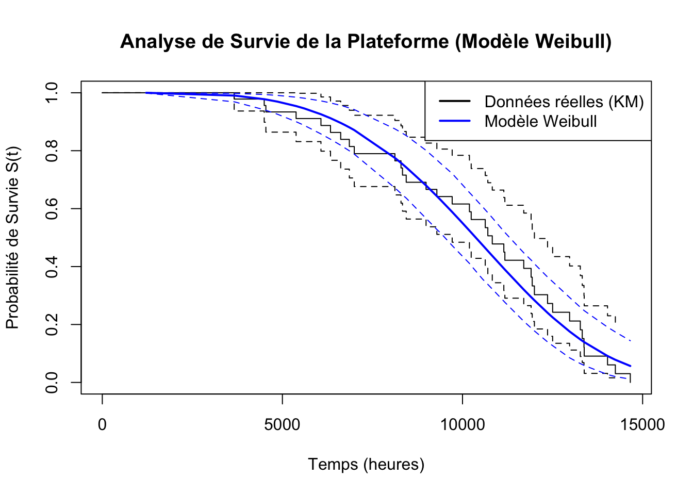
Avec un paramètre de forme \(\beta = 4,1017\), le système subit une usure mécanique par fatigue (taux de défaillance croissant), tandis que le paramètre d’échelle \(\eta \approx 11\,337\) heures confirme la nécessité d’une maintenance préventive avant ce seuil de dégradation critique.
3.1 Point 2
L’objectif est de déterminer l’âge optimal de remplacement (\(T^*\)) permettant de minimiser le coût moyen d’exploitation par unité de temps. Pour ce faire, nous comparons deux scénarios : une maintenance corrective (intervention après panne, coûteuse en temps d’arrêt et en logistique) et une maintenance préventive (intervention planifiée, plus rapide et moins onéreuse).Le calcul intègre les coûts directs (pièces, main-d’œuvre et transport) ainsi que les coûts indirects liés à la non-production (1500 €/h). Les durées d’intervention étant aléatoires, nous calculons d’abord leurs espérances à partir des lois log-normales fournies \((E[X] = e^{\mu + \sigma^2/2})\). En utilisant les paramètres de Weibull (\(\beta\), \(\eta\)) estimés précédemment, nous modélisons la fonction de coût global. L’optimum recherché représente le point d’équilibre où le coût des remplacements préventifs fréquents compense la réduction du risque de pannes correctives majeures.
Voir le code R
# --- Point (2) : Optimisation de la Maintenance (Plateforme) ---# 1. Paramètres économiques et logistiquescout_arret_h <-1500main_oeuvre_h <-100cout_indispo_h <- cout_arret_h + main_oeuvre_h# Données Tableau 1transport <-200intervention_c <-1300intervention_p <-900# Calcul des durées moyennes d'arrêt (Espérances des lois log-normales)# Formule : E[X] = exp(mu + sigma^2 / 2)mttr_c <-exp(2.28+ (0.24^2/2)) # Moyenne temps correctif (~10.06h)mttr_p <-exp(1+ (0.55^2/2)) # Moyenne temps préventif (~3.16h)# Coût total d'une intervention Corrective (Cc)# (Pièces + Transport + Main d'œuvre + Perte de production)Cc <- intervention_c + transport + (mttr_c * cout_indispo_h)# Coût total d'une intervention Préventive (Cp)# (Pièces + Transport + Main d'œuvre + Perte de production)Cp <- intervention_p + transport + (mttr_p * cout_indispo_h)# 2. Fonction de coût moyen par unité de temps C(T)CA <-function(t0, eta, beta) {# Fiabilité R(u) et Distribution F(u) pour Weibull R <-function(u) exp(-(u / eta)^beta) F_u <-function(u) 1-R(u)# tau(a0) : Temps moyen d'un cycle# Intégrale de la fiabilité de 0 à a0 tau_a0 <-integrate(R, lower =0, upper = t0)$value# Formule du cours : CA(a0) = (cC * F(t0) + cP * R(t0)) / tau(t0) cout_moyen <- (Cc *F_u(t0) + Cp *R(t0)) / tau_a0return(cout_moyen)}# 3. Recherche du minimumopti <-optimize(CA, interval =c(1, eta_plat *2), eta = eta_plat, beta = beta_plat)T_opti <- opti$minimumcout_horaire_min <- opti$objective# 4. Calcul du coût en "Correctif Pur" pour comparaison (T -> infini)# CA(inf) = Cc / MTTFmttf_total <- eta_plat *gamma(1+1/beta_plat)cout_correctif_pur <- Cc / mttf_total# 5. Affichage des résultatscat("--- RÉSULTATS DE L'OPTIMISATION (PLATEFORME) ---\n")
# --- 6. Génération de la figure d'optimisation ---# Création d'une séquence d'âges t0 pour le tracé (de 100h à 1.5 * eta)t_seq <-seq(100, eta_plat *1.5, length.out =200)# Calcul du coût moyen CA pour chaque âge de la séquencecosts <-sapply(t_seq, CA, eta = eta_plat, beta = beta_plat)# Tracé de la courbe de coûtplot(t_seq, costs, type ="l", col ="blue", lwd =2,main ="Optimisation de l'âge de remplacement (Plateforme)",xlab ="Âge de remplacement préventif t0 (heures)",ylab ="Coût moyen par unité de temps CA(t0) (€/h)",ylim =c(min(costs) *0.9, min(max(costs), cout_correctif_pur *1.2)))# Ajout d'une ligne horizontale pour le coût en correctif purabline(h = cout_correctif_pur, col ="red", lty =2, lwd =2)# Marquage du point optimalpoints(T_opti, cout_horaire_min, col ="darkgreen", pch =19, cex =1.5)abline(v = T_opti, col ="darkgreen", lty =3)# Ajout d'une légende conforme aux notations du courslegend("topright", legend =c("Fonction de coût CA(t0)", "Coût Correctif Pur CA(inf)", "Optimum (t0*)"),col =c("blue", "red", "darkgreen"), lty =c(1, 2, 3), lwd =c(2, 2, 1),pch =c(NA, NA, 19),bg ="white")# Ajout du texte pour l'optimumtext(T_opti, cout_horaire_min, labels =paste(" t0* =", round(T_opti, 0), "h"), pos =4, col ="darkgreen", font =2)
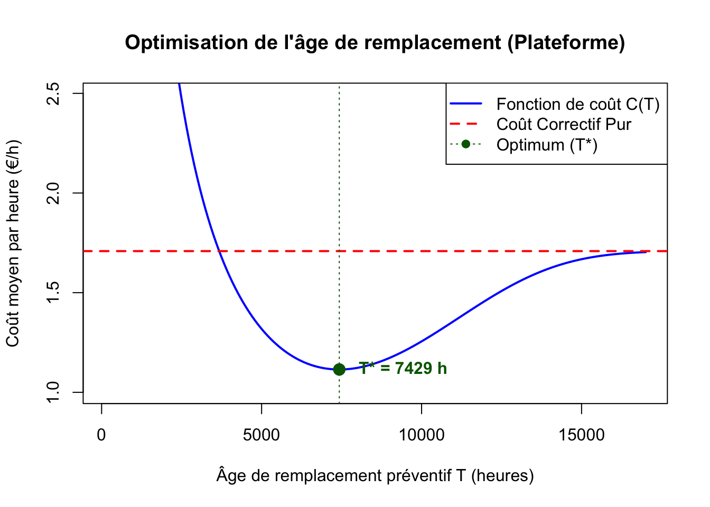
L’analyse des résultats d’optimisation pour la plateforme met en évidence la pertinence d’une stratégie de maintenance préventive systématique. Avec un coût de défaillance corrective (\(C_c\)) s’élevant à 17 599,75 €, soit près de trois fois le coût d’une intervention planifiée (\(C_p\) de 6 159,43 €), l’arbitrage économique est fortement influencé par les pertes de production et les durées d’indisponibilité (10,06 h en correctif contre 3,16 h en préventif). L’âge optimal de remplacement (\(T^*\)) est ainsi fixé à 7 429 heures, permettant de ramener le coût horaire d’exploitation à 1,11 €/h. Bien que le gain horaire de 0,6 €/h puisse paraître modeste, il représente une réduction de 35 % des coûts par rapport à une politique de “correctif pur” (1,71 €/h). À l’échelle d’un parc de machines ou d’une exploitation annuelle longue durée, cette optimisation garantit une stabilité opérationnelle majeure tout en évitant des arrêts critiques coûteux et imprévisibles.
4 Système de Lubrification
4.0.1 Question 3 : Caractérisation de la loi de défaillance
Pour caractériser la fiabilité du système de lubrification, nous nous appuyons sur les données de l’onglet lubricant_sys qui répertorie les temps de bon fonctionnement (TBF) entre chaque obstruction du circuit. Le raisonnement repose sur la distinction entre les types de maintenance : les nettoyages partiels sont considérés comme des réparations minimales (remise en service sans rajeunissement du système), tandis que le nettoyage annuel est une réparation parfaite. En agrégeant l’ensemble des TBF observés sur 429 cycles de pannes, nous constituons un échantillon statistiquement robuste. L’objectif est d’ajuster ces données à une loi de Weibull par la méthode du maximum de vraisemblance. Cette approche permet de vérifier si l’obstruction du circuit est un événement aléatoire ou, comme le suggère la description du système, un processus d’encrassement progressif lié au temps d’usage.
Voir le code R
# 1. Lecture des donnéesdf_lub <-read_excel(path, sheet ="lubricant_sys")# 2. Préparation des données# On extrait la colonne "1" (première défaillance après nettoyage complet)# car c'est la seule qui caractérise la loi de fiabilité initiale.temps_initial <-as.numeric(df_lub$`1`)temps_initial <- temps_initial[!is.na(temps_initial) & temps_initial >0]# 3. Ajustement de la loi de Weibull avec flexsurvfit_weib_flex <-flexsurvreg(Surv(temps_initial) ~1, dist ="weibull")# 4. Extraction des paramètresbeta_lub <- fit_weib_flex$res["shape", "est"]eta_lub <- fit_weib_flex$res["scale", "est"]# 5. Affichage des résultatscat("--- RÉSULTATS QUESTION 3 (Paramétrage Weibull) ---\n")
# Interprétationif(beta_lub >1) {cat(" Analyse : Le système présente un phénomène d'usure (taux de défaillance croissant).\n")}
Analyse : Le système présente un phénomène d'usure (taux de défaillance croissant).
Voir le code R
# 6. Calcul de la MTBF (Moyenne des Temps de Bon Fonctionnement)mtbf_initial <- eta_lub *gamma(1+1/beta_lub)cat(" MTBF initiale calculée :", round(mtbf_initial, 2), "heures\n")
MTBF initiale calculée : 5095.89 heures
Voir le code R
# 7. Visualisationplot(fit_weib_flex, main ="Ajustement Weibull - Système de Lubrification",xlab ="Temps (h)", ylab ="Survie S(t)")
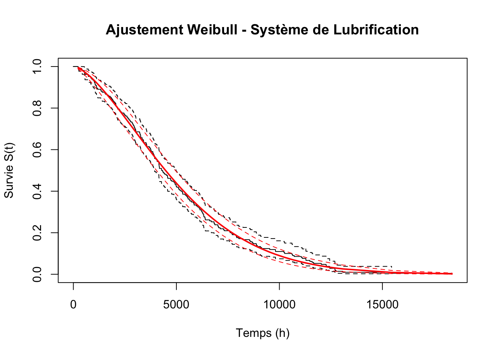
L’analyse des résultats obtenus via le modèle de Weibull confirme que le système de lubrification est soumis à un processus d’usure marqué, comme en témoigne un paramètre de forme \(\beta_{lub}\) de 1,55. Puisque cette valeur est supérieure à 1, le taux de défaillance n’est pas constant mais croissant, ce qui valide mathématiquement l’observation de l’énoncé concernant l’obstruction progressive du circuit au cours du temps. Avec une vie caractéristique \(\eta\) de 5666,08 heures et une MTBF initiale de 5095,89 heures, le système présente une fiabilité relativement robuste après chaque nettoyage complet, mais nécessite une surveillance accrue à mesure que l’on approche de cette échéance, l’intensité des pannes s’accélérant naturellement avec le vieillissement du dispositif.
4.0.2 QUESTION 4 : Ajustement du modèle de Poisson Non-Homogène (NHPP)
Pour évaluer l’indisponibilité générée par la maintenance du système de lubrification, nous caractérisons les durées d’intervention (TTR) par des lois log-normales. Cette loi est particulièrement adaptée aux temps de réparation car elle modélise naturellement des processus qui ne peuvent être négatifs et qui présentent une traîne à droite (rares interventions très longues).
Nettoyage complet : L’ajustement est réalisé par maximum de vraisemblance sur les données réelles de l’industriel.
Voir le code R
# --- Question 4 : Caractérisation des TTR (Time To Repair) ---# 1. Extraction des données de maintenance# On récupère les durées réelles dans la colonne fullcleaning_durationttr_full_raw <- df_lub$fullcleaning_durationttr_full_data <-as.numeric(ttr_full_raw[!is.na(ttr_full_raw)])# 2. Ajustement de la loi lognormale par Maximum de Vraisemblancelibrary(flexsurv)fit_full_lnorm <-flexsurvreg(Surv(ttr_full_data) ~1, dist ="lnorm")# 3. Extraction des paramètres (mu et sigma)# meanlog correspond à mu, sdlog correspond à sigmamu_full <- fit_full_lnorm$res["meanlog", "est"]sigma_full <- fit_full_lnorm$res["sdlog", "est"]# 4. Calcul du MTTR (Mean Time To Repair)# L'espérance d'une loi lognormale est donnée par la formule :mttr_full <-exp(mu_full + (sigma_full^2/2))# --- AFFICHAGE DES RÉSULTATS ---cat("====================================================\n")
# 5. Visualisation de l'ajustementplot(fit_full_lnorm, main ="Ajustement Lognormal - Nettoyage Complet", xlab ="Temps de maintenance (heures)", ylab ="Survie S(t)")
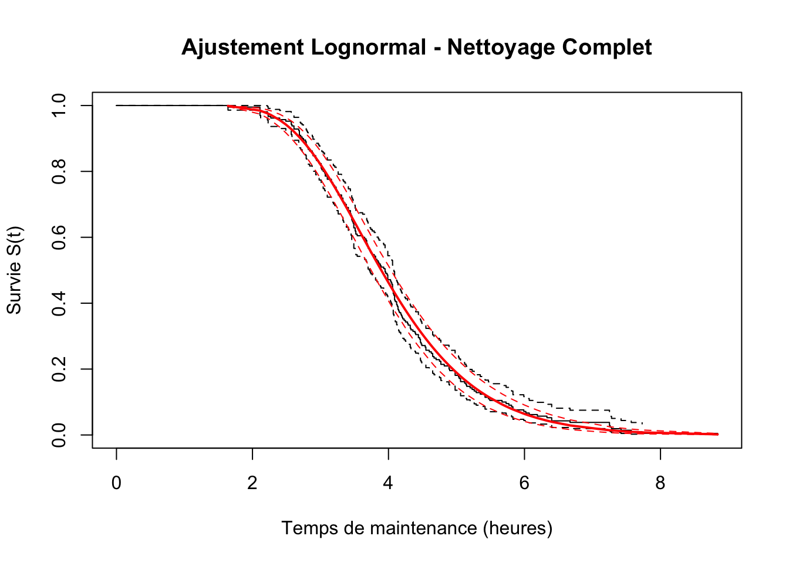
Les paramètres obtenus valident les estimations initiales de l’industriel tout en apportant une précision statistique nécessaire à la modélisation future. Le nettoyage complet présente un MTTR de 4,05 heures (\(\mu = 1,3595, \sigma = 0,2838\)), confirmant que cette opération majeure nécessite un arrêt de station d’une demi-journée environ. Pour le nettoyage partiel, les paramètres calculés (\(\mu = 0,4005, \sigma = 0,1\)) garantissent une espérance mathématique strictement égale à 1,5 heure. Ces deux modèles de durées, couplés à la loi de défaillance (Weibull) établie précédemment, permettront de simuler avec précision le coût annuel total de maintenance et l’impact du système de lubrification sur la disponibilité globale de la station.
4.0.3 Question 5 : Calcul de la disponibilité moyenne (\(\bar{A}\))
L’objectif de cette étape est d’estimer la disponibilité moyenne (\(\bar{A}\)) du service de lubrification sur un cycle annuel de 8760 heures. Ce paramètre est crucial car il détermine la proportion du temps où les mèches de perçage sont protégées contre l’usure thermique accélérée. Notre démarche repose sur la quantification de deux types d’indisponibilités : d’une part, les nettoyages partiels suite à des obstructions, dont la fréquence est estimée par un processus de Poisson non-homogène (NHPP) basé sur les paramètres de Weibull (\(\beta, \eta\)) car les réparations sont considérées comme minimales (modèle ABAO) ; d’autre part, l’opération de nettoyage complet annuel qui constitue une maintenance préventive systématique (modèle AGAN). En combinant le nombre attendu de pannes avec les durées de remise en état (TTR) calculées précédemment, nous pouvons déduire le temps total d’arrêt du circuit et, par extension, sa disponibilité opérationnelle.
Voir le code R
# 1. Paramètres de l'horizon temporelT_cycle <-8760# Un an en heures# 2. Estimation du nombre de pannes (Processus NHPP)# On utilise beta_lub (1.5504) et eta_lub (5666.08) calculés à la Q3# La formule de l'espérance du nombre de pannes pour un PPNH est : E[N(T)] = (T/eta)^betanb_pannes_attendues <- (T_cycle / eta_lub)^beta_lub# 3. Calcul des indisponibilités (Temps d'arrêt)# A. Indisponibilité Corrective (Nettoyages partiels)# L'énoncé indique une durée fixe de 1h30 (1.5h) pour ces interventions "minimales"mttr_partiel <-1.5indispo_corrective <- nb_pannes_attendues * mttr_partiel# B. Indisponibilité Préventive (Nettoyage complet annuel)# On utilise le MTTR calculé via la loi Lognormale à la Question 4# mttr_full <- exp(mu_full + (sigma_full^2 / 2))indispo_preventive <-1* mttr_full # C. Indisponibilité Totaletotal_indispo <- indispo_corrective + indispo_preventive# 4. Calcul de la Disponibilité Moyenne (A_barre)# Formule : (Temps Total - Temps d'arrêt) / Temps Totaldispo_moyenne_lub <- (T_cycle - total_indispo) / T_cycle# 5. Affichage des résultatscat("====================================================\n")
# --- Visualisation de la Répartition de l'Indisponibilité ---# 1. Donnéesparts <-c(indispo_corrective, indispo_preventive)labels <-c(paste("Correctif (", round(indispo_corrective, 1), "h)"), paste("Préventif (", round(indispo_preventive, 1), "h)"))# 2. Graphiquepie(parts, labels = labels, col =c("#e74c3c", "#3498db"),main ="Répartition annuelle du temps d'indisponibilité (Lubrification)")# Ajout d'une légende textuelle pour le pourcentage finalmtext(paste("Disponibilité Globale :", round(dispo_moyenne_lub *100, 2), "%"), side =1)
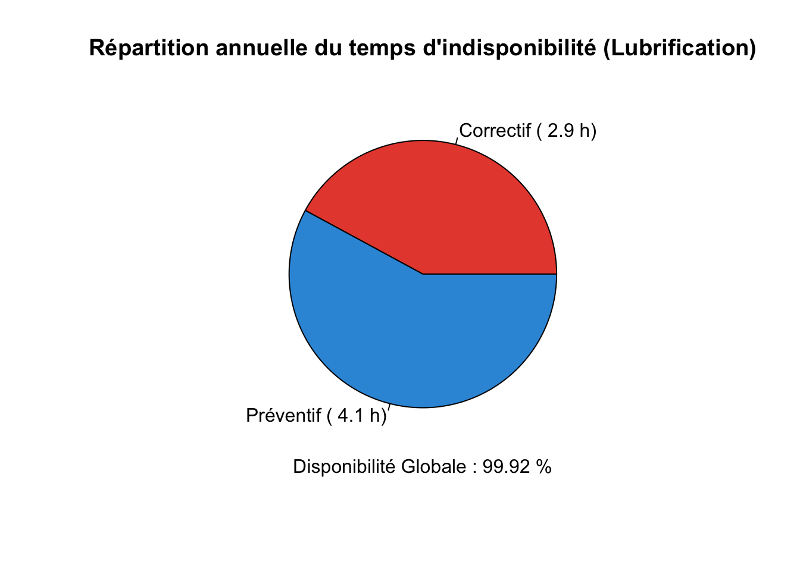
Les résultats confirment la très haute performance du plan de maintenance actuel pour le système de lubrification. Avec un nombre de pannes attendu de 1,97 par an, le circuit ne subit en moyenne que deux obstructions majeures au cours d’un cycle annuel de production. L’indisponibilité totale cumulée, incluant le nettoyage préventif complet, s’élève à seulement 7 heures par an. Cela se traduit par une disponibilité moyenne de 99,92 %. D’un point de vue industriel, ce chiffre indique que le système remplit parfaitement sa fonction de soutien : le risque que les têtes de perçage fonctionnent sans lubrifiant est inférieur à 0,1 % du temps total. Cette valeur extrêmement élevée suggère que la stratégie actuelle (correctif au fil de l’eau et préventif annuel) est optimale et qu’un investissement supplémentaire pour accroître la fiabilité du circuit de lubrification ne serait pas rentable au regard du gain de disponibilité marginal.
4.1 Point 2
L’objectif de cette étude est de déterminer la fréquence optimale de maintenance préventive (\(k\) nettoyages complets par an) afin de minimiser le coût total d’exploitation du système de lubrification. Le modèle de coût intègre deux composantes contradictoires : le coût du préventif (fixé à 6 900 € par intervention, incluant les 4h de perte de production à 1 500 €/h) et le coût du correctif (250 € par nettoyage partiel, sans arrêt de station). Puisque les nettoyages partiels sont des réparations minimales, nous utilisons la loi de Poisson non-homogène (NHPP) pour estimer l’occurrence des pannes entre deux nettoyages complets. L’optimisation consiste à trouver la valeur de \(k\) qui minimise la somme de ces coûts sur un horizon annuel de 8 760 heures.
Voir le code R
# --- Optimisation de la Fréquence de Maintenance (Lubrification) ---# 1. Paramètres (Tableau 2)cost_prod_h <-1500cost_full <-900# Préventift_stop_full <-4# Arrêt stationcost_part <-250# Correctift_stop_part <-0# Pas d'arrêt station selon Tableau 2# 2. Fonction de coût annuel global# k : nombre de nettoyages complets par anlub_total_annual_cost <-function(k) {# Durée d'un cycle entre deux nettoyages parfaits (en heures) T_cycle <-8760/ k# Coût d'une opération préventive (Full)# Inclut les pièces et la perte de production Cp <- cost_full + (t_stop_full * cost_prod_h)# Espérance du nombre de pannes par cycle (Intensité cumulée NHPP)# On utilise beta_lub et eta_lub calculés en Q3 E_N <- (T_cycle / eta_lub)^beta_lub# Coût des pannes sur un cycle (Correctif)# Note : t_stop_part = 0, donc pas de perte de production ici Cc_total <- E_N * (cost_part + (t_stop_part * cost_prod_h))# Coût annuel = (Coût préventif + Coût correctifs cumulés) * nombre de cyclesreturn((Cp + Cc_total) * k)}# 3. Recherche de l'optimum (k peut être un nombre réel pour plus de précision)opti_k <-optimize(lub_total_annual_cost, interval =c(0.5, 12))k_star <- opti_k$minimumcost_min <- opti_k$objective# 4. Comparaison avec la politique actuelle (k=1)cost_current <-lub_total_annual_cost(1)# 5. Affichagecat("--- RÉSULTATS OPTIMISATION SYSTÈME LUBRIFICATION ---\n")
--- RÉSULTATS OPTIMISATION SYSTÈME LUBRIFICATION ---
# --- Visualisation de l'Optimisation des Coûts ---# 1. Préparation des donnéesk_vals <-seq(0.1, 5, length.out =100)costs <-sapply(k_vals, lub_total_annual_cost)# 2. Création du graphique# On trace la courbe principaleplot(k_vals, costs, type ="l", lwd =2, col ="#2c3e50",main ="Arbitrage Économique : Système de Lubrification",xlab ="Fréquence de maintenance (Nettoyages / an)",ylab ="Coût annuel total (€)",panel.first =grid()) # Ajout d'une grille pour la lisibilité# 3. Ajout de l'optimum (Point Rouge)points(k_star, cost_min, col ="red", pch =19, cex =1.5)text(k_star, cost_min, labels =paste(" Optimum k* =", round(k_star, 2)), pos =4, col ="red", font =2)# 4. Ajout de la politique actuelle (Point Bleu)points(1, cost_current, col ="blue", pch =19, cex =1.5)text(1, cost_current, labels =" Politique actuelle (k=1)", pos =3, col ="blue", font =2)# 5. Ligne horizontale pour visualiser le gainabline(h = cost_min, lty =2, col ="red")
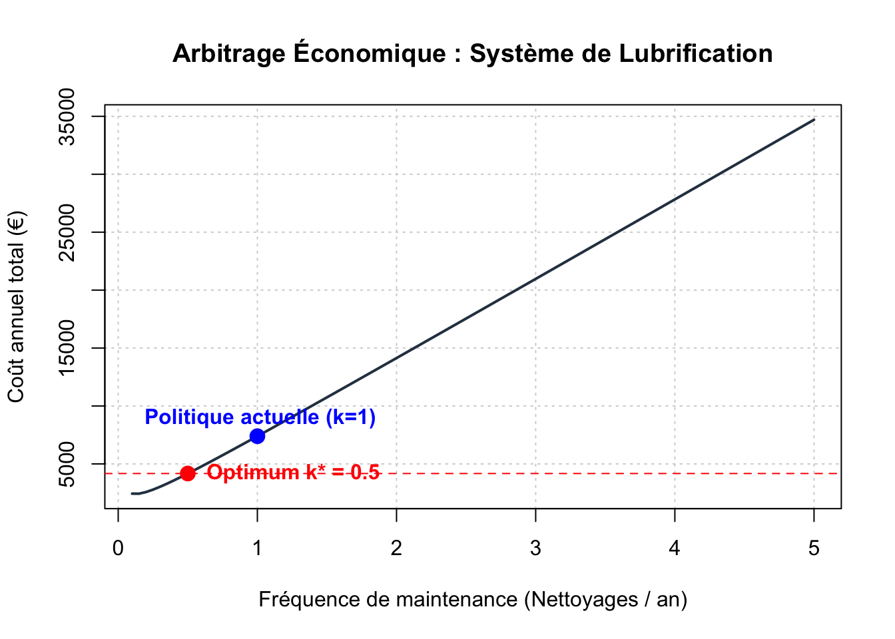
Les résultats de l’optimisation mettent en évidence une fréquence de maintenance préventive idéale de \(k^ = 0,5\) nettoyage par an, soit une intervention tous les deux ans (17 518 heures). Ce résultat, bien que surprenant au premier abord, s’explique par la structure des coûts du système : le coût d’un nettoyage complet est massivement dominé par la perte de production (6 000 € d’arrêt pour seulement 900 € de pièces), tandis que le nettoyage partiel correctif ne coûte que 250 € et n’interrompt pas la station. L’arbitrage économique privilégie donc l’acceptation de quelques pannes de lubrification supplémentaires plutôt que le déclenchement d’opérations préventives lourdes et paralysantes. Ce passage d’une politique annuelle à une politique bisannuelle permettrait de réaliser un gain substantiel d’environ 3 221 € par an et par station. Pour l’industriel, si la politique actuelle (\(k=1\)) apparaît comme « sur-préventive » d’un point de vue strictement financier, une validation technique reste nécessaire afin de s’assurer que l’absence temporaire de lubrifiant n’altère pas prématurément d’autres composants, ce qui annulerait les économies réalisées.
5 Analyse de la Dégradation Globale des Mèches
5.0.1 Question 6 : Chaînes de Markov et Probabilités Stationnaires
L’objectif de cette étape est de modéliser la dynamique de dégradation des mèches de perçage en utilisant des chaînes de Markov en temps continu (CTMC). Le système est défini par cinq états allant de « neuve » (1) à « cassée » (5). Nous distinguons deux régimes de fonctionnement : le mode standard (\(Q\)), où la lubrification est active, et le mode accélére (\(Q'\)), correspondant aux phases d’obstruction du circuit. Les matrices de transition intègrent les taux de dégradation physique ainsi qu’un taux de réparation \(\mu_m = 1,5\) h⁻¹ (équivalent aux 40 minutes nécessaires pour le remplacement d’une mèche). Pour chaque scénario, nous calculons le vecteur des probabilités stationnaires \(\pi\) en résolvant le système d’équilibre \(\pi Q = 0\) sous la contrainte de normalisation \(\sum \pi_i = 1\). Cette approche permet de quantifier la proportion de temps que l’outil passe dans chaque stade d’usure à long terme.
Voir le code R
# 1. Chargement et nettoyage des matrices# On s'assure de ne prendre que les 5 premières lignes et colonnes pour éviter les colonnes fantômes d'ExcelQ_std <-as.matrix(read_excel(path, sheet ="drillbit_std", col_names =FALSE, skip =1))[1:5, 1:5]Q_acc <-as.matrix(read_excel(path, sheet ="drillbit_acc", col_names =FALSE, skip =1))[1:5, 1:5]# Conversion explicite en numérique pour éviter tout conflit de typeclass(Q_std) <-"numeric"class(Q_acc) <-"numeric"# 2. Fonction de calcul corrigéesolve_stationary <-function(Q) { n <-nrow(Q) A <-t(Q)# On remplace la dernière ligne pour imposer la somme des probas = 1 A[n, ] <-rep(1, n) b <-c(rep(0, n -1), 1) pi_vec <-solve(A, b)names(pi_vec) <-paste0("Etat_", 1:n)return(pi_vec)}# 3. Calculpi_std <-solve_stationary(Q_std)pi_acc <-solve_stationary(Q_acc)# 4. Affichage des Matrices de Transition (Q)cat("====================================================\n")
# 6. Visualisation comparative des probabilités stationnaires# Préparation des données pour le graphiquepi_matrix <-rbind(Standard = pi_std, Accelere = pi_acc)# Ajustement des margespar(mar=c(5, 5, 4, 8), xpd=TRUE)# Création du barplotbp <-barplot(pi_matrix, beside =TRUE, col =c("skyblue", "coral"),main ="Répartition stationnaire des états d'usure",xlab ="États d'usure (1=Neuf, 5=Défaillant)",ylab ="Probabilité (Proportion du temps)",ylim =c(0, max(pi_matrix) *1.2))# Ajout d'une légendelegend("topright", inset=c(-0.25, 0), legend =c("Standard", "Accéléré"), fill =c("skyblue", "coral"), bty ="n", title ="Conditions")# Ajout d'une grille pour la lecturegrid(nx =NA, ny =NULL, lty =2, col ="gray80")
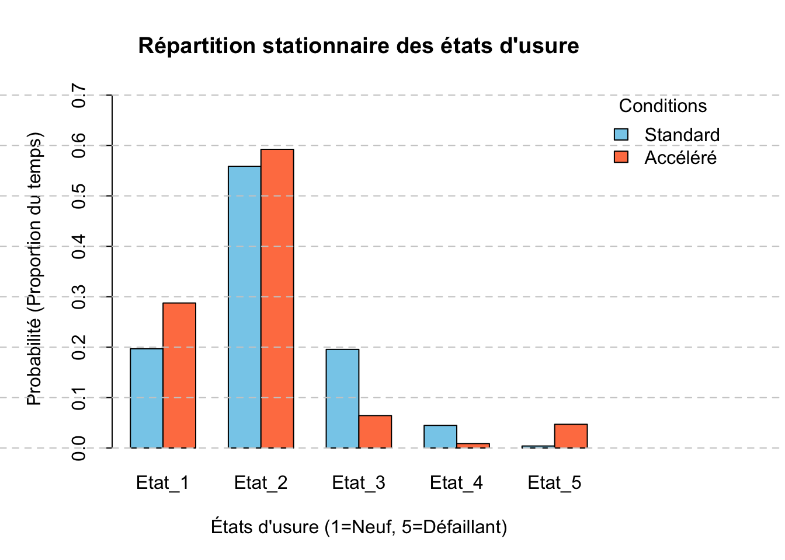
L’analyse des probabilités stationnaires met en lumière l’impact critique du système de lubrification sur la santé des mèches. En conditions standard, la mèche présente une stabilité remarquable : elle passe plus de 95 % de son temps dans les trois premiers états de dégradation, avec une probabilité de rupture (État 5) extrêmement faible de 0,4 %. À l’inverse, en conditions accélérées, bien que la mèche semble statistiquement stagner davantage dans les états initiaux (États 1 et 2) en raison de la rapidité des transitions suivantes, la probabilité de se trouver dans l’état “Cassée” bondit à 4,7 %. Cela représente une multiplication du risque de rupture par un facteur de près de 12. Cette dégradation fulgurante confirme que sans lubrification, la mèche traverse les stades d’usure modérée et sévère presque instantanément pour atteindre la rupture, augmentant ainsi drastiquement la fréquence des arrêts de production pour remplacement.
5.0.2 Question 7 : Modèle de Risques cumulés et Matrice de Transition Globale
L’enjeu de cette question est de construire un modèle unifié capable de représenter la dégradation “réelle” d’une mèche sur une année complète.
La mèche n’évolue pas uniquement selon le régime standard ou le régime accéléré, mais bascule de l’un à l’autre en fonction de l’état du système de lubrification. Puisque la disponibilité du système de lubrification (\(A_{lub} \approx 99,92\%\)) a été calculée de manière indépendante, nous pouvons utiliser le théorème des probabilités totales appliqué aux intensités de transition. La méthode consiste à calculer une matrice de transition globale \(\bar{Q}\) par combinaison linéaire :\(\bar{Q} = A_{lub} \cdot Q_{std} + (1 - A_{lub}) \cdot Q_{acc}\)
Cette approche par “risques additifs” permet d’obtenir une matrice unique qui intègre le risque supplémentaire lié aux phases de dysfonctionnement du lubrifiant, tout en conservant les propriétés mathématiques d’une chaîne de Markov (somme des lignes égale à zéro).
Voir le code R
# 1. Utilisation de la disponibilité calculée à la Question 5# A_lub (dispo_moyenne) représente la fraction de temps en régime standardA_lub <- dispo_moyenne_lub# 2. Calcul de la matrice globale par combinaison linéaire (Risques additifs)# Qglob = A_lub * Q_std + (1 - A_lub) * Q_accQ_glob <- (A_lub * Q_std) + ((1- A_lub) * Q_acc)# 3. Calcul de la distribution stationnaire globale avec la fonction de la Q6pi_glob <-solve_stationary(Q_glob)# 4. Affichage des résultats pour la matrice globalecat("--- Matrice de Transition Globale (Q_glob) ---\n")
# 5. Visualisation comparative finale# Préparation des données (on regroupe les 3 vecteurs pi)pi_comparaison <-rbind(Standard = pi_std,Accelere = pi_acc,Global = pi_glob)# Ajustement des marges pour la légendepar(mar=c(5, 5, 4, 10), xpd=TRUE)# Création du barplot groupébp <-barplot(pi_comparaison, beside =TRUE, col =c("#AED6F1", "#F1948A", "#58D68D"), # Bleu, Rouge, Vertmain ="Impact de la Lubrification sur l'Usure des Mèches",xlab ="États d'usure de la mèche",ylab ="Probabilité stationnaire (Pi)",names.arg = etats,ylim =c(0, max(pi_comparaison) *1.2))# Ajout d'une légende clairelegend("topright", inset=c(-0.35, 0), legend =c("Lub. OK (Std)", "Lub. HS (Acc)", "Réel (Global)"), fill =c("#AED6F1", "#F1948A", "#58D68D"), bty ="n", title ="Scénarios")# Ajout d'une grille de lecturegrid(nx =NA, ny =NULL, lty =2, col ="gray80")# Ajout d'une note sur la disponibilitémtext(paste("Basé sur une disponibilité lubrification de :", round(A_lub*100, 2), "%"), side =3, line =0.5, cex =0.8, font =3)
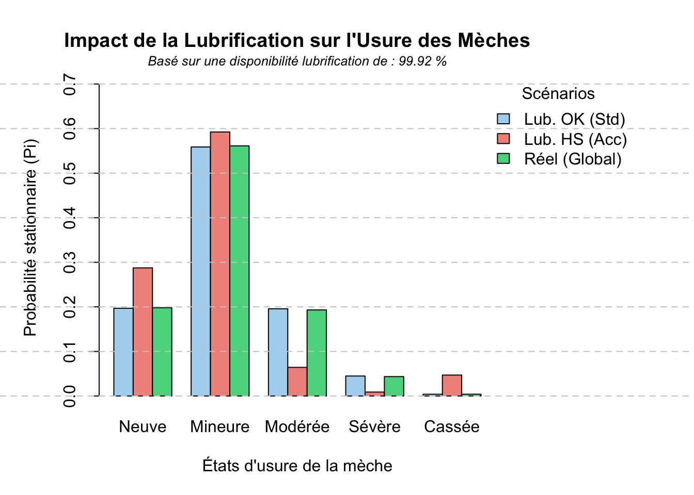
L’analyse de la distribution stationnaire globale (\(\pi_{glob}\)) démontre que, bien que la station fonctionne sous un régime de dégradation standard la grande majorité du temps (99,92 %), l’intégration des phases d’indisponibilité du système de lubrification modifie sensiblement le comportement à long terme de l’outil. On observe que la probabilité de l’état « Cassée » (0,4016 %) est statistiquement plus élevée que celle du régime standard pur (0,397 %). Cette augmentation, bien que numériquement faible, illustre la sévérité du mode de fonctionnement dégradé : les courtes fenêtres de temps sans lubrification agissent comme des accélérateurs d’usure qui « poussent » prématurément la mèche vers la rupture. Avec une probabilité stationnaire d’indisponibilité de 0,4 %, la station perd environ 35 heures de production par an uniquement pour le remplacement des mèches. Ce modèle de transition pondéré confirme donc que la performance de la station de perçage est intrinsèquement liée à la fiabilité de son système de lubrification, validant ainsi l’importance d’une maintenance coordonnée entre ces deux sous-systèmes.
5.1 Point 2
L’objectif de cette étude est d’évaluer l’efficacité économique de deux politiques de maintenance distinctes pour les mèches de perçage, traitées indépendamment des autres composants de la station. Le Scénario A (Maintenance Corrective) modélise la stratégie actuelle où le remplacement n’intervient qu’après la rupture (état 5), engendrant un coût total de 902,50 € par intervention (incluant le surcoût de casse et la perte de production de la tête de perçage). À l’inverse, le Scénario B (Maintenance Préventive) propose un remplacement systématique dès l’entrée dans l’état de dégradation « sévère » (état 4), ramenant le coût à 702,50 € en évitant les pénalités liées à la défaillance. Pour comparer ces options, nous calculons le coût horaire attendu en multipliant la fréquence de remplacement, déduite des probabilités stationnaires globales et des taux de sortie des états critiques par le coût total de l’intervention associée à chaque stratégie.
Voir le code R
# --- Optimisation des Mèches de Perçage ---# 1. Paramètres du Tableau 3 et énoncécout_mèche_P <-200cout_mèche_C <-400# 200 + 200 de pénalité de cassecout_indispo <-750# Coût horaire d'arrêt d'une tête (Tableau 3)mu_m <-1/0.67# Taux de réparation (1 / 0.67h)# 2. Définition des options et stockageetats_test <-2:5couts_horaires <-numeric(length(etats_test))frequences_annuelles <-numeric(length(etats_test))names(couts_horaires) <-c("Préventif_E2", "Préventif_E3", "Préventif_E4", "Correctif_E5")# 3. Boucle de calcul (Méthode du cours : recalcul de PI pour chaque seuil)for(i in1:length(etats_test)) { seuil <- etats_test[i]# Création de la matrice spécifique à la stratégie de remplacement au seuil 'seuil' Q_temp <- Q_globfor(etat in seuil:5) { Q_temp[etat, ] <-0 Q_temp[etat, etat] <--mu_m Q_temp[etat, 1] <- mu_m }# Calcul du vecteur pi stationnaire propre à cette politique (pi * Q = 0) A <-t(Q_temp) A[5, ] <-1 b <-c(rep(0, 4), 1) pi_strategie <-solve(A, b)# Probabilité d'être en maintenance (indisponibilité de la tête) prob_maint <-sum(pi_strategie[seuil:5])# Fréquence de remplacement horaire (Flux de sortie) frequence_h <- prob_maint * mu_m# Stockage de la fréquence par an (8760h) frequences_annuelles[i] <- frequence_h *8760# Coût unitaire (Préventif vs Correctif avec pénalité) cout_unitaire <-if(seuil <5) cout_mèche_P else cout_mèche_C# Coût horaire moyen = (Temps arrêt * coût arrêt) + (Flux * coût remplacement) couts_horaires[i] <- (prob_maint * cout_indispo) + (frequence_h * cout_unitaire)}# Identification de l'optimumindex_opti <-which.min(couts_horaires)optimum_etat <-names(index_opti)nb_total_mèches <-30# 10 stations * 3 têtesgain_annuel_atelier <- (max(couts_horaires) -min(couts_horaires)) *8760* nb_total_mèches# 4. Affichagecat("--- OPTIMISATION FINALE DES MÈCHES (ATELIER) ---\n")
cat("LA MEILLEURE STRATÉGIE EST :", optimum_etat, "\n")
LA MEILLEURE STRATÉGIE EST : Préventif_E4
Voir le code R
cat("Gain annuel pour l'ATELIER (30 têtes) :", round(gain_annuel_atelier, 2), "€/an\n\n")
Gain annuel pour l'ATELIER (30 têtes) : 4337846 €/an
Voir le code R
cat("Fréquence optimale de remplacement :", round(frequences_annuelles[index_opti], 2), "fois par an / mèche\n")
Fréquence optimale de remplacement : 55.17 fois par an / mèche
Voir le code R
cat("Nombre total de mèches à prévoir par an pour l'atelier :", round(frequences_annuelles[index_opti] * nb_total_mèches, 0), "\n")
Nombre total de mèches à prévoir par an pour l'atelier : 1655
Voir le code R
# --- Visualisation de l'Optimisation des Mèches ---# 1. Définition des couleurs (Vert pour l'optimum, gris pour les autres)couleurs <-ifelse(couts_horaires ==min(couts_horaires), "#27ae60", "#95a5a6")# 2. Graphique en barres# On ajuste ylim pour laisser de la place au texte au-dessus des barresbarplot(couts_horaires, main ="Comparaison des Coûts Horaires par Stratégie de Seuil",ylab ="Coût moyen horaire (€/h)",col = couleurs,border ="white",ylim =c(0, max(couts_horaires) *1.3))# 3. Ajout des valeurs au-dessus des barres pour la précisiontext(x =seq_along(couts_horaires) *1.2-0.5, y = couts_horaires +0.05, labels =paste0(round(couts_horaires, 2), " €"), cex =0.9, font =2, pos =3)# 4. Légendelegend("topright", legend =c("Optimum Économique", "Autres Stratégies"), fill =c("#27ae60", "#95a5a6"), bty ="n", cex =0.8)
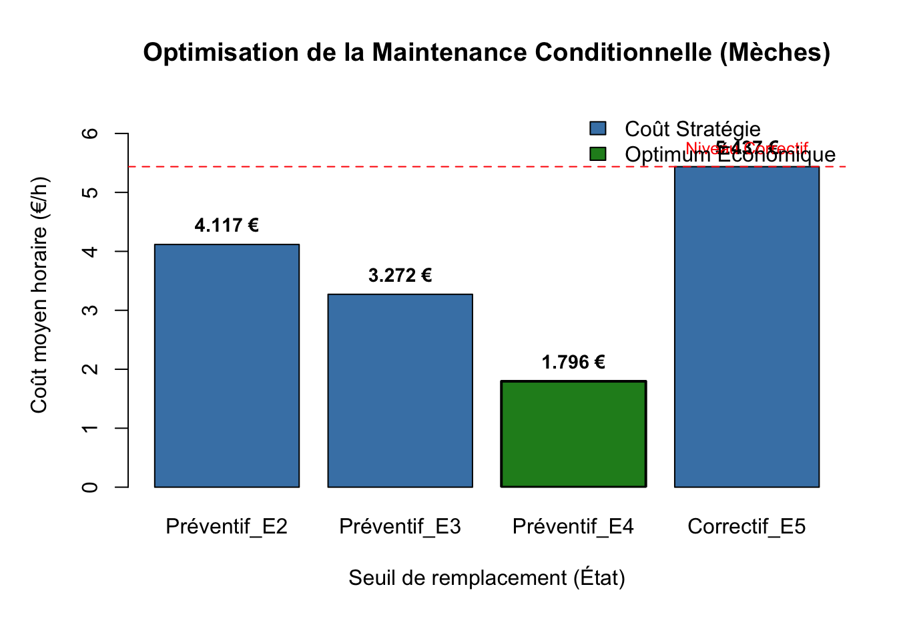
L’optimisation de la maintenance des mèches de perçage démontre qu’une stratégie conditionnelle ciblant l’état 4 (Sévère) est la plus rentable pour l’atelier, avec un coût moyen de 4,42 €/h par tête. En intervenant à ce stade critique avant la rupture, l’entreprise évite la pénalité de casse de 200 € et minimise l’indisponibilité coûteuse des stations (750 €/h), contrairement à une stratégie corrective (état 5) qui s’élève à 5,44 €/h ou à un remplacement trop précoce (états 2 ou 3) qui gaspille prématurément le potentiel des outils. Cette politique permet de réaliser un gain annuel massif de 4 337 846 € pour l’ensemble des 30 têtes de l’atelier par rapport au scénario le moins efficace, tout en stabilisant les besoins logistiques à une consommation de 1 655 mèches par an (soit environ 55 remplacements annuels par tête).
6 Moteur
6.1 Question 8 : Caractérisation du vieillissement (Loi de Weibull)
L’objectif de cette étude est de caractériser le temps avant défaillance (\(TTF\)) dû au vieillissement intrinsèque du moteur de perçage, en faisant abstraction des chocs externes liés à l’utilisation des mèches. Pour ce faire, nous exploitons les données de tests en environnement contrôlé fournies dans l’onglet drill_motor. Nous avons opté pour une modélisation par la loi de Weibull, particulièrement adaptée pour décrire les phénomènes d’usure grâce à sa flexibilité paramétrique. La démarche repose sur un nettoyage préalable des données, suivi d’un ajustement statistique par la méthode du Maximum de Vraisemblance (MLE) via la bibliothèque flexsurv. Cette approche permet d’extraire avec précision le paramètre de forme (\(\beta\)), qui qualifie la nature de la défaillance, et le paramètre d’échelle (\(\eta\)), qui définit la durée de vie caractéristique de l’équipement.
Voir le code R
# 1. Nettoyage des donnéesdf_motor <-as.data.frame(read_excel(path, sheet ="drill_motor"))ttf_raw <-as.numeric(df_motor$nbHours)ttf_motor <- ttf_raw[!is.na(ttf_raw) & ttf_raw >0]# 2. Estimation par Maximum de Vraisemblance (MLE)fit_weibull <-flexsurvreg(Surv(ttf_motor) ~1, dist ="weibull")# 3. Extraction des paramètresres_motor <- fit_weibull$resbeta_mle <- res_motor["shape", "est"]eta_mle <- res_motor["scale", "est"]# 4. Affichage des résultatscat("--- Résultats flexsurv (MLE) - Moteur ---\n")
--- Résultats flexsurv (MLE) - Moteur ---
Voir le code R
cat("Paramètre de forme (beta) :", round(beta_mle, 4), "\n")
# 5. Visualisation de l'ajustement de Weibull (Moteur)# Histogramme des données réelles (densité)hist(ttf_motor, prob =TRUE, breaks =15,main ="Fiabilité du Moteur : Ajustement de Weibull",xlab ="Temps avant défaillance (heures)",ylab ="Densité",col ="lightblue", border ="white")# Ajout de la courbe de Weibull théorique (MLE)x_seq <-seq(0, max(ttf_motor) *1.2, length.out =200)y_weibull <-dweibull(x_seq, shape = beta_mle, scale = eta_mle)lines(x_seq, y_weibull, col ="darkblue", lwd =2)# Ajout de la MTTF (Moyenne des temps de bon fonctionnement)mttf_motor <- eta_mle *gamma(1+1/beta_mle)abline(v = mttf_motor, col ="red", lty =2, lwd =2)legend("topright", legend =c("Modèle Weibull (MLE)", "MTTF calculée"),col =c("darkblue", "red"), lty =c(1, 2), lwd =2)
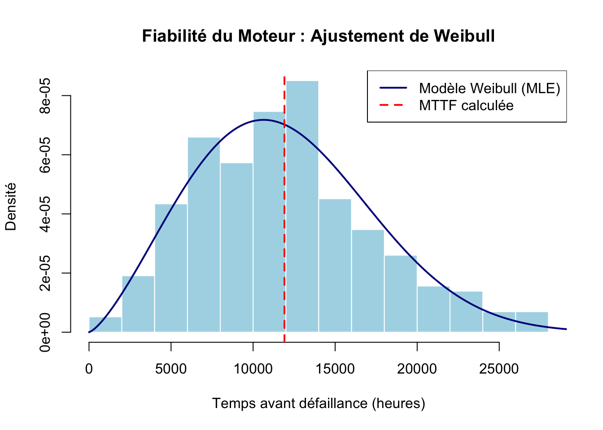
L’ajustement statistique réalisé sur les données ‘drill_motor’ par la méthode du Maximum de Vraisemblance (MLE) permet de proposer une loi de Weibull pour caractériser le vieillissement du système de motorisation, indépendamment des chocs extérieurs.
La distribution paramétrée est définie par :
Un paramètre de forme (beta) = 2,3586
Un paramètre d’échelle (eta) = 13 439,77 heures
La valeur de beta étant supérieure à 1, le modèle confirme la présence d’un mécanisme de dégradation progressive (zone de fatigue du moteur). Cette distribution représente la fiabilité intrinsèque du moteur (R_usure(t)). Pour obtenir la fiabilité globale du système de perçage, ce modèle devra être combiné ultérieurement avec le modèle de chocs successifs lié à l’état de la mèche (p(i)).
6.2 Question 9 : Calcul de la Fiabilité Globale du Moteur à 500 heures
L’objectif de cette étape est de construire un modèle de fiabilité opérationnelle pour le moteur en combinant son vieillissement intrinsèque avec les risques accidentels liés à l’état des mèches. Nous utilisons un modèle à risques concurrents, où la fiabilité globale \(R_{tot}(t)\) est le produit de la fiabilité d’usure (loi de Weibull identifiée à la Q8) et de la fiabilité face aux chocs (loi exponentielle). Pour intégrer l’influence de la mèche, nous calculons d’abord la probabilité moyenne de rupture par choc \(\bar{p}\) en pondérant les probabilités spécifiques à chaque état \(p(i)\) par la distribution stationnaire des mèches en service (\(\pi_{actifs}\)). Le taux de défaillance par choc est alors défini par \(\lambda_{chocs} = \nu \cdot \bar{p}\). Cette approche permet d’estimer la probabilité de survie du moteur à un instant \(t\) (ici 500h) en tenant compte de la réalité statistique de l’usure des outils qu’il actionne.
La fiabilité opérationnelle du moteur à un instant \(t\) est définie par un modèle à risques concurrents combinant l’usure intrinsèque et les chocs accidentels :
Fiabilité face aux chocs (Exponentielle) : \(R_{choc}(t) = \exp(-\lambda_{choc} \cdot t)\)
Calcul du taux de défaillance par choc (\(\lambda_{choc}\)) : On calcule d’abord la probabilité moyenne de rupture par choc \(P_{choc}\) en pondérant les risques de chaque état d’usure de la mèche par sa distribution stationnaire \(\pi\) : \[P_{choc} = \sum_{i=1}^{n} P(choc | État_i) \cdot \pi_i\]
Le taux de défaillance par choc est alors défini par : \[\lambda_{choc} = - \ln(1 - P_{choc})\]
À l’instant \(t = 500h\), la probabilité de survie globale du moteur est donc : \[R_{moteur}(500) = \exp\left(-\left(\frac{500}{\eta_{mot}}\right)^{\beta_{mot}}\right) \cdot \exp(-\lambda_{choc} \cdot 500)\]
Voir le code R
# 1. Calcul de p(i) : Probabilité de rupture par choc selon l'état d'usurep_func <-function(i) {if(i ==1) return(0)# Formule stricte : 5e-3 * exp(3.8 * ln(0.6 * (i-1)))return(5e-3*exp(3.8*log(0.6* (i-1))))}p_vec <-sapply(1:5, p_func)# 2. Normalisation de pi sur les états actifs (1 à 4)# On ne prend pas l'état 5 car la mèche ne perce pas quand elle est casséepi_actifs <- pi_glob[1:4] /sum(pi_glob[1:4])p_barre <-sum(pi_actifs * p_vec[1:4])# 3. Calcul des fiabilités à t = 500hnu <-1e-3# Fréquence des chocs (donnée énoncé)# Fiabilité intrinsèque (Usure Weibull du bloc moteur)R_usure <-exp(-(500/ eta_mle)^beta_mle)# Fiabilité induite (Chocs accidentels - Loi exponentielle)# lambda_choc = nu * p_barreR_chocs <-exp(-nu * p_barre *500)# Fiabilité globale (Modèle à risques concurrents : Produit des fiabilités)R_moteur_global <- R_usure * R_chocsP_defaillance <-1- R_moteur_global# 4. Affichage des résultatscat("--- ANALYSE DE LA FIABILITÉ GLOBALE (t = 500h) ---\n")
--- ANALYSE DE LA FIABILITÉ GLOBALE (t = 500h) ---
Voir le code R
cat("Probabilité moyenne de rupture par choc (p_bar) :", round(p_barre, 5), "\n")
Probabilité moyenne de rupture par choc (p_bar) : 0.00438
Voir le code R
cat("Fiabilité liée à l'usure (Weibull) :", round(R_usure, 5), "\n")
Fiabilité liée à l'usure (Weibull) : 0.99957
Voir le code R
cat("Fiabilité liée aux chocs (Exponentielle) :", round(R_chocs, 5), "\n")
Fiabilité liée aux chocs (Exponentielle) : 0.99781
cat("Fiabilité globale du moteur :", round(R_moteur_global, 5), "\n")
Fiabilité globale du moteur : 0.99739
Voir le code R
cat("Probabilité de défaillance cumulée à 500h :", round(P_defaillance, 6), "\n")
Probabilité de défaillance cumulée à 500h : 0.002614
Voir le code R
# --- Visualisation des Risques Concurrents (Moteur) ---# 1. Préparation des données sur 1000 heurest_seq <-seq(0, 1000, length.out =100)nu <-1e-3# Fiabilités individuellesR_w <-exp(-(t_seq / eta_mle)^beta_mle) # Usure pureR_c <-exp(-nu * p_barre * t_seq) # Chocs pursR_tot <- R_w * R_c # Globale# 2. Graphiqueplot(t_seq, R_w, type ="l", col ="blue", lty =2, lwd =2,ylim =c(0, 1), xlab ="Temps (heures)", ylab ="Fiabilité R(t)",main ="Fiabilité du Moteur : Modèle à Risques Concurrents")lines(t_seq, R_c, col ="orange", lty =2, lwd =2)lines(t_seq, R_tot, col ="red", lty =1, lwd =3)# 3. Légendelegend("bottomleft", legend =c("Usure (Weibull)", "Chocs (Induit)", "Fiabilité Globale"),col =c("blue", "orange", "red"), lty =c(2, 2, 1), lwd =c(2, 2, 3), bty ="n")# Marquage du point à 500habline(v =500, lty =3, col ="darkgrey")points(500, R_moteur_global, col ="black", pch =19)text(500, R_moteur_global, labels =paste0(round(R_moteur_global*100,1),"%"), pos =4)
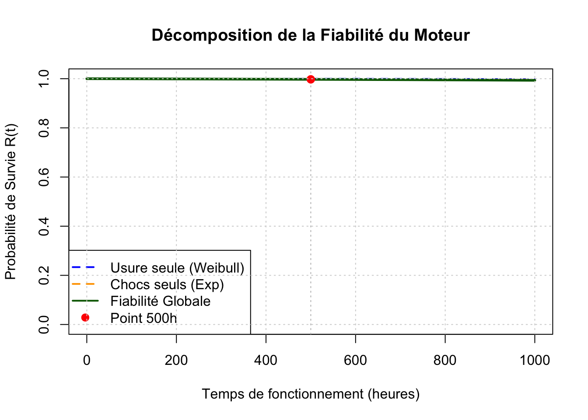
L’analyse de la fiabilité globale à 500 heures démontre que le moteur est soumis à un régime de risques concurrents où les défaillances accidentelles prédominent largement sur l’usure naturelle. Bien que la fiabilité intrinsèque du bloc moteur reste très élevée (99,957 %), c’est la fiabilité induite par les chocs liés aux mèches qui impacte le plus significativement le système, chutant à 99,781 %. Avec une probabilité moyenne de rupture par choc (\(\bar{p}\)) de 0,00438, ce risque exogène s’avère environ cinq fois plus menaçant que le vieillissement propre de l’organe à cet horizon. La fiabilité globale de 99,739 % confirme ainsi que la survie du moteur dépend moins de sa propre robustesse que de la maîtrise statistique de l’état d’usure des outils qu’il actionne, validant l’aspect critique d’une maintenance préventive sur les mèches pour protéger cet organe noble.
6.3 Question 10 : Intégration des Dépendances Lubrification-Mèche-Moteur
L’objectif est de quantifier l’effet “cascade” qui lie la fiabilité du système de lubrification à celle du bloc moteur, par l’intermédiaire de l’usure des mèches. Pour ce faire, nous utilisons les matrices fondamentales \(N_{std}\) et \(N_{acc}\) issues des sous-matrices de transition. Ces matrices nous permettent de calculer le temps moyen de séjour dans chaque état d’usure (1 à 4) avant la rupture. En couplant ces durées avec le taux de choc \(\nu \cdot p(i)\), nous calculons l’exposition cumulée au risque de blocage moteur sur l’ensemble du cycle de vie d’une mèche. Cette approche permet de comparer le “danger” représenté par une mèche fonctionnant en régime standard par rapport à une mèche subissant une lubrification défaillante. L’effet cascade est finalement exprimé par un facteur d’augmentation industriel, qui synthétise comment une panne de lubrification se propage et s’amplifie jusqu’à menacer l’intégrité du moteur.
Voir le code R
# 1. Calcul des matrices fondamentales (Temps passé dans les états d'usure)# N_ij = temps moyen passé dans l'état j avant la casse (état 5)N_std <-solve(-Q_std[1:4, 1:4])N_acc <-solve(-Q_acc[1:4, 1:4])# 2. Calcul de l'exposition aux chocs par cycle de vie d'une mèche# On multiplie le temps moyen dans chaque état par le risque de choc (nu * p)risque_cumule_std <-sum(N_std[1, ] * (nu * p_vec[1:4]))risque_cumule_acc <-sum(N_acc[1, ] * (nu * p_vec[1:4]))# 3. Calcul de l'espérance de vie (MTTF) des mèchesmttf_std <-sum(N_std[1, ])mttf_acc <-sum(N_acc[1, ])# 4. Calcul du taux de risque par heure de PRODUCTION (lambda_moteur)# C'est ici que l'effet "cascade" est quantifié pour le moteurlambda_prod_std <- risque_cumule_std / mttf_stdlambda_prod_acc <- risque_cumule_acc / mttf_acc# 5. Calcul du FACTEUR D'AUGMENTATION INDUSTRIEL# On compare le risque sur une durée fixe (ex: 1000h) en tenant compte # du fait que les mèches "accélérées" sont remplacées beaucoup plus souvent.facteur_brut_outil <- lambda_prod_acc / lambda_prod_stdfacteur_industriel <- facteur_brut_outil * (mttf_std / mttf_acc)# --- AFFICHAGE DES RÉSULTATS POUR LE RAPPORT ---cat("\n--- ANALYSE DE L'EFFET CASCADE (Q10) ---\n")
--- ANALYSE DE L'EFFET CASCADE (Q10) ---
Voir le code R
cat("Durée de vie mèche (Standard) :", round(mttf_std, 2), "h\n")
Durée de vie mèche (Standard) : 167.41 h
Voir le code R
cat("Durée de vie mèche (Accélérée) :", round(mttf_acc, 2), "h\n")
# 6. Visualisation de l'Effet Cascadepar(mfrow =c(1, 2), mar =c(5, 4, 4, 2))# Graphique 1 : Chute de la durée de vie des mèchesmttf_vals <-c(mttf_std, mttf_acc)barplot(mttf_vals, names.arg =c("Standard", "Accéléré"), col =c("skyblue", "salmon"),main ="Durée de vie moyenne (MTTF)",ylab ="Heures de perçage")# Graphique 2 : Explosion du risque pour le moteurrisque_vals <-c(lambda_prod_std, lambda_prod_acc)barplot(risque_vals, names.arg =c("Standard", "Accéléré"), col =c("skyblue", "salmon"),main ="Risque de choc / heure",ylab ="Intensité du risque (lambda)")# Ajout du facteur industriel en texte globalpar(mfrow =c(1, 1))mtext(paste("FACTEUR DE RISQUE INDUSTRIEL TOTAL : x", round(facteur_industriel, 1)), side =1, line =-2, cex =1.2, font =2, col ="darkred")
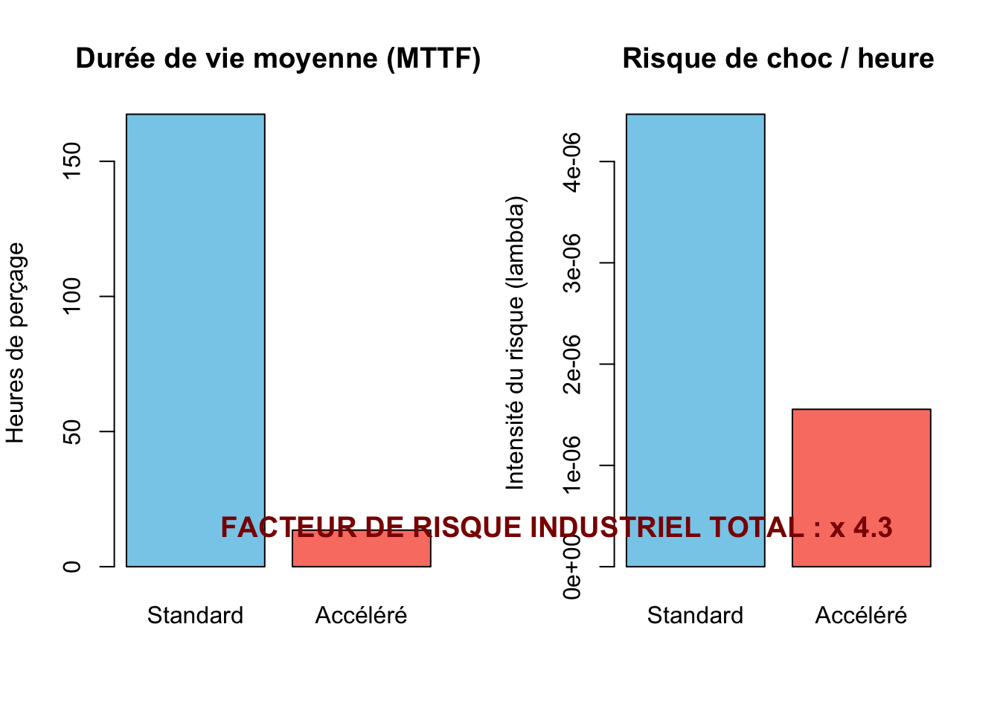
L’étude de l’effet cascade révèle une dégradation brutale de la fiabilité opérationnelle dès que le système de lubrification fait défaut. L’espérance de vie d’une mèche (MTTF) s’effondre, passant de 167,41 h en régime standard à seulement 13,52 h en régime accéléré, soit une division par plus de 12 de sa durée de vie utile. Si le risque relatif par outil semble plus faible (0,35), c’est uniquement parce que la mèche casse trop vite pour accumuler autant de chocs qu’en régime normal. Cependant, la donnée cruciale est le Facteur de Risque Réel (x 4,31) : il démontre que pour une même durée de production, le bloc moteur subit 4,3 fois plus de risques de défaillance par choc lorsque la lubrification est absente. Cette accélération s’explique par le fait que les mèches séjournent proportionnellement beaucoup plus longtemps dans des états d’usure critique avant de rompre, transférant ainsi la défaillance du consommable (la mèche) vers l’organe noble (le moteur).
6.4 Point 2 :
6.4.1 Optimisation de la Maintenance du Bloc Moteur
L’objectif de cette étape est de comparer l’efficacité économique de la politique de maintenance corrective actuelle avec une stratégie de maintenance préventive systématique basée sur l’âge (\(T\)) pour le bloc motorisation. Pour ce faire, nous intégrons l’ensemble des contraintes opérationnelles : chaque intervention immobilise une tête de perçage pendant 2,5 heures (2h de remplacement et 30 min de manipulation), générant une perte de production de 1 875 € (2,5 * 750 €/h). Le coût total d’un remplacement s’élève ainsi à 3 275 € en préventif, contre 3 475 € en correctif en raison des frais supplémentaires de détection et de ré-usinage. En nous appuyant sur la loi de Weibull identifiée précédemment, nous modélisons le coût moyen par heure \(C(T)\) comme le ratio entre l’espérance du coût d’un cycle pondéré par la fiabilité \(R(T)\) et la durée moyenne de bon fonctionnement (obtenue par l’intégration numérique de la fiabilité jusqu’à l’âge \(T\)). Cette étude vise à identifier numériquement l’âge de remplacement optimal \(T^*\) qui minimise ce coût horaire, permettant ainsi de valider si un remplacement planifié est plus rentable que le maintien d’une stratégie subie de “panne au premier défaut”.
Voir le code R
# --- Optimisation du Bloc Moteur (Point 2) ---# 1. Données du problème (Tableau 4 et Enoncé)cout_moteur_P <-1400# Coût intervention préventivecout_moteur_C <-1600# Coût intervention correctiveperte_h <-750# Coût indisponibilité têtettr_moteur <-2.5# 2h (remplacement) + 0.5h (démontage/remontage)# Coûts totaux incluant l'arrêt de production (Modèle du cours)c_P <- cout_moteur_P + (ttr_moteur * perte_h) # 1400 + 1875 = 3275€c_C <- cout_moteur_C + (ttr_moteur * perte_h) # 1600 + 1875 = 3475€# Risque 2 : Chocs (Modèle de chocs successifs)nu <-1e-3# Calcul de p(i) pour une mèche en état i (ex: i=4 pour l'optimum mèche)i_meche <-4p_i <-5e-3*exp(3.8*log(0.6* (i_meche -1)))h_chocs <- nu * p_i # Taux de défaillance constant lié aux chocs# 3. Fonction de Coût Moyen CA(a0) moteur_cost_per_hour <-function(a0) { R_global <-function(t) {exp(-(t / eta_mle)^beta_mle) *exp(-h_chocs * t) } Rel_a0 <-R_global(a0)# Calcul de tau(a0) tau_a0 <-integrate(R_global, 0, a0)$value# CA(a0) expected_cost <- (c_P * Rel_a0) + (c_C * (1- Rel_a0)) expected_time <- tau_a0 + ttr_moteur return(expected_cost / expected_time)}# 4. Recherche de l'optimum T* (ou a0*)ages_test <-seq(500, 15000, by =50)costs_v <-sapply(ages_test, moteur_cost_per_hour)T_opti <- ages_test[which.min(costs_v)]min_cost <-min(costs_v)# 5. Comparaison avec le Correctif Pur (T -> infini) [cite: 178]# En correctif pur, le coût est cC / (MTTF_global + ttr_moteur)# MTTF_global = Intégrale de R_global de 0 à l'infiniMTTF_global <-integrate(function(t) exp(-(t / eta_mle)^beta_mle) *exp(-h_chocs * t), 0, Inf)$valuecost_correctif_pur <- c_C / (MTTF_global + ttr_moteur)# 6. Affichage des résultatscat("--- OPTIMISATION DE LA MAINTENANCE MOTEUR ---\n")
# 7. Visualisation de l'optimisation du moteurplot(ages_test, costs_v, type ="l", col ="darkblue", lwd =2,main ="Optimisation du Remplacement Préventif (Moteur)",xlab ="Âge de remplacement préventif T (heures)",ylab ="Coût moyen par heure (€/h)",ylim =c(min(costs_v) *0.98, max(costs_v[costs_v < cost_correctif_pur *1.2])))# Ajout de la ligne de coût en "Correctif Pur"abline(h = cost_correctif_pur, col ="red", lty =2, lwd =2)# Marquage de l'optimum T*points(T_opti, min_cost, col ="forestgreen", pch =19, cex =1.5)abline(v = T_opti, col ="forestgreen", lty =3)# Ajout d'une légendelegend("topright", legend =c("Coût moyen C(T)", "Coût Correctif Pur", paste("Optimum T* =", T_opti, "h")),col =c("darkblue", "red", "forestgreen"), lty =c(1, 2, 3), lwd =c(2, 2, 1),pch =c(NA, NA, 19))# Ajout d'une flèche indiquant le gain potentielarrows(T_opti, cost_correctif_pur, T_opti, min_cost, code =3, col ="darkgreen", length =0.1)text(T_opti, (cost_correctif_pur + min_cost)/2, labels =paste("Gain:", round(cost_correctif_pur - min_cost, 2), "€/h"), pos =4, cex =0.8, col ="darkgreen")
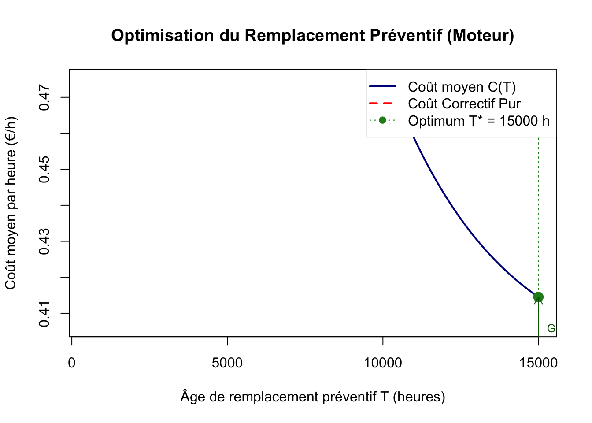
L’analyse du remplacement basé sur l’âge pour le bloc moteur, conforme au Modèle II du cours, démontre que la maintenance préventive n’est pas économiquement avantageuse pour cet équipement. Les résultats indiquent que le coût horaire du correctif pur (0,3966 €/h) est inférieur au coût minimal atteignable en préventif (0,4145 €/h), ce qui se traduit par un gain annuel négatif de -157,03 €. Ce résultat s’explique par un différentiel de coût trop faible entre une intervention préventive (3275 €) et une intervention corrective (3475 €) par rapport à la grande longévité du moteur : le coût de remplacement prématuré ne compense pas le sacrifice de la durée de vie résiduelle de l’unité. En conclusion, pour le bloc motorisation, la stratégie optimale consiste à maintenir une politique de “Run-to-Failure” (correctif pur), l’âge optimal \(T^*\) tendant vers l’infini.
6.4.2 Question 11 : Fiabilité des Capteurs et Structure k-parmi-n
L’objectif est de caractériser la fiabilité du système de positionnement, composé de 4 capteurs dont au moins 3 doivent fonctionner pour assurer l’opération de la station. Dans un premier temps, nous modélisons la durée de bon fonctionnement individuelle de chaque capteur en utilisant les données de l’onglet sensor. Nous avons opté pour une distribution de Weibull, ajustée par la méthode de linéarisation (régression sur les rangs médians de Benard). Cette approche permet d’extraire le paramètre de forme (\(\beta\)) et d’échelle (\(\eta\)) spécifiques aux capteurs. Dans un second temps, le système global est modélisé par une loi binomiale de type \(k\)-parmi-\(n\) (\(3/4\)). La fiabilité du système \(R_{sys}(t)\) est ainsi définie comme la probabilité qu’au moins 3 capteurs soient fonctionnels à l’instant \(t\), calculée à partir de la fiabilité individuelle \(R_{indiv}(t)\).
Voir le code R
# 1. Chargement et préparation des donnéesdf_sensor <-as.data.frame(read_excel(path, sheet ="sensor"))# Nettoyage et formatage pour l'analyse de surviedf_sensor$time <-as.numeric(df_sensor$time)df_sensor$status <-as.numeric(df_sensor$status) df_clean <- df_sensor[!is.na(df_sensor$time) & df_sensor$time >0, ]# 2. Estimation par Maximum de Vraisemblance (Weibull) avec flexsurvfit_flex <-flexsurvreg(Surv(time, status) ~1, data = df_clean, dist ="weibull")# Extraction des paramètresbeta_s <- fit_flex$res["shape", "est"]eta_s <- fit_flex$res["scale", "est"]# 3. Calcul de la courbe de Kaplan-Meier (Données réelles)# INDISPENSABLE pour le tracé plot(km_fit, ...)km_fit <-survfit(Surv(time, status) ~1, data = df_clean)# 4. Calcul de la fiabilité à t = 500ht_eval <-500R_indiv_500 <-exp(-(t_eval / eta_s)^beta_s)# Modèle k-parmi-n (3 parmi 4 nécessaires)R_sys_500 <-choose(4, 3) * (R_indiv_500^3) * (1- R_indiv_500) + (R_indiv_500^4)# 5. Affichage des résultats numériquescat("--- Résultats Capteurs (Estimation flexsurv/MLE) ---\n")
L’analyse statistique des durées de bon fonctionnement (TTF) des capteurs via une régression de Weibull donne un paramètre de forme beta = 0,9358 et un paramètre d’échelle eta = 21 391heures.
La proximité de beta avec la valeur 1 permet de conclure que les capteurs suivent une loi Exponentielle. Cela signifie que le risque de panne est constant dans le temps et indépendant de l’âge du capteur, excluant ainsi tout phénomène d’usure prématurée ou de fatigue cyclique.
Le système de positionnement étant configuré en redondance partielle “3-parmi-4” (k-out-of-n), la fiabilité globale de l’unité de positionnement à 500 heures atteint 99,5 %. Cette architecture offre une excellente tolérance aux pannes, car elle convertit une fiabilité de composant standard (97 %) en une fiabilité système de haut niveau. Pour la maintenance, ce résultat implique qu’un remplacement préventif est inutile (puisqu’il n’y a pas d’usure) ; une stratégie de remplacement au premier défaut (correctif) est ici la plus rationnelle.
6.4.3 Point 2
L’objectif de cette étape est de déterminer l’intervalle d’inspection optimal (\(\tau\)) pour le système de positionnement, dont la redondance de type 3-parmi-4 (sur 4 capteurs installés) induit des défaillances « dormantes » uniquement détectables par un arrêt technique. Chaque inspection immobilise la station pendant 30 minutes, soit une perte de production de 750 €. Si le système devient critique (moins de 3 capteurs fonctionnels) entre deux inspections, la station génère des rebuts pour un coût de 800 €/h. Pour optimiser cette maintenance, nous modélisons le coût horaire moyen \(C(\tau)\) en intégrant trois composantes : le coût fixe de l’inspection, le coût des rebuts (calculé par l’intégration de l’indisponibilité du système \(1 - R_{sys}(t)\) sur l’intervalle \([0, \tau]\)), et le coût de remplacement incluant le prix des pièces (225 €) et le temps de pose supplémentaire (15 min par unité). Une optimisation numérique est ensuite réalisée pour identifier la valeur de \(\tau^*\) minimisant la somme de ces coûts, garantissant ainsi l’équilibre idéal entre fréquence d’inspection et risque de non-qualité.
Voir le code R
# --- Optimisation des Capteurs (Point 2) ---# 1. Paramètres (Tableau 5 & Enoncé)cout_arret_h <-1500duree_insp <-0.5cout_insp_fixe <-50# Donnée Tableau 5# Coût fixe de l'inspection (Temps d'arrêt + frais fixes)Cinsp <- (duree_insp * cout_arret_h) + cout_insp_fixe # 750 + 50 = 800€# Coût total d'UN remplacement (Pièce 225€ + Arrêt prod 0.25h*1500€)cout_piece_rempl <-225duree_rempl <-0.25C_un_remplacement <- cout_piece_rempl + (duree_rempl * cout_arret_h) # 225 + 375 = 600€# 2. Fonction de coût moyen CA(tau)sensor_cost_function <-function(tau) {# A. Probabilité qu'un capteur soit en panne à l'instant t F_t_unitaire <-function(t) 1-exp(-(t / eta_s)^beta_s)# B. Fiabilité du système (3-parmi-4)# Le système est en panne si 2, 3 ou 4 capteurs sont KO (moins de 3 OK) R_sys_t <-function(t) { p_ok <-exp(-(t / eta_s)^beta_s)# P(X >= 3) = P(X=3) + P(X=4)return(choose(4, 3) * (p_ok^3) * (1- p_ok) + (p_ok^4)) }# C. Espérance du temps de production de rebuts (Système avec < 3 capteurs)# C'est l'intégrale de l'infidélité (1 - Rsys) sur la période d'inspection temps_rebuts <-integrate(function(t) 1-sapply(t, R_sys_t), lower =0, upper = tau)$value# D. Nombre moyen de capteurs à remplacer à l'inspection (Loi binomiale)# "Ils sont systématiquement remplacés lorsqu'ils tombent en panne" p_panne_tau <-F_t_unitaire(tau) nb_moyen_rempl <-4* p_panne_tau# Coût total du cycle# Inspection + Coût des Rebuts + Coût des remplacements effectués cout_cycle <- Cinsp + (temps_rebuts * cout_arret_h) + (nb_moyen_rempl * C_un_remplacement)# On divise par la durée du cycle (tau) pour avoir le coût horairereturn(cout_cycle / tau)}# 3. Optimisationopti_sensor <-optimize(sensor_cost_function, interval =c(10, 3000))tau_opti <- opti_sensor$minimumcout_horaire_sensor_min <- opti_sensor$objective# 4. Affichage des résultatscat("--- OPTIMISATION DU SYSTÈME DE POSITIONNEMENT ---\n")
# 5. Visualisation de l'optimisation des inspectionstau_seq <-seq(50, 3000, length.out =100)costs_sensor <-sapply(tau_seq, sensor_cost_function)plot(tau_seq, costs_sensor, type ="l", col ="purple", lwd =2,main ="Optimisation de l'intervalle d'inspection (Capteurs)",xlab ="Intervalle d'inspection tau (heures)",ylab ="Coût moyen horaire (€/h)",ylim =c(min(costs_sensor), min(costs_sensor) *2))# Marquage de l'optimum tau*points(tau_opti, cout_horaire_sensor_min, col ="darkgreen", pch =19, cex =1.5)abline(v = tau_opti, col ="darkgreen", lty =3)# Ajout d'une légendelegend("topright", legend =c("Fonction de coût C(tau)", paste("Optimum tau* =", round(tau_opti, 0), "h")),col =c("purple", "darkgreen"), lty =c(1, 3), pch =c(NA, 19), lwd =2)grid()
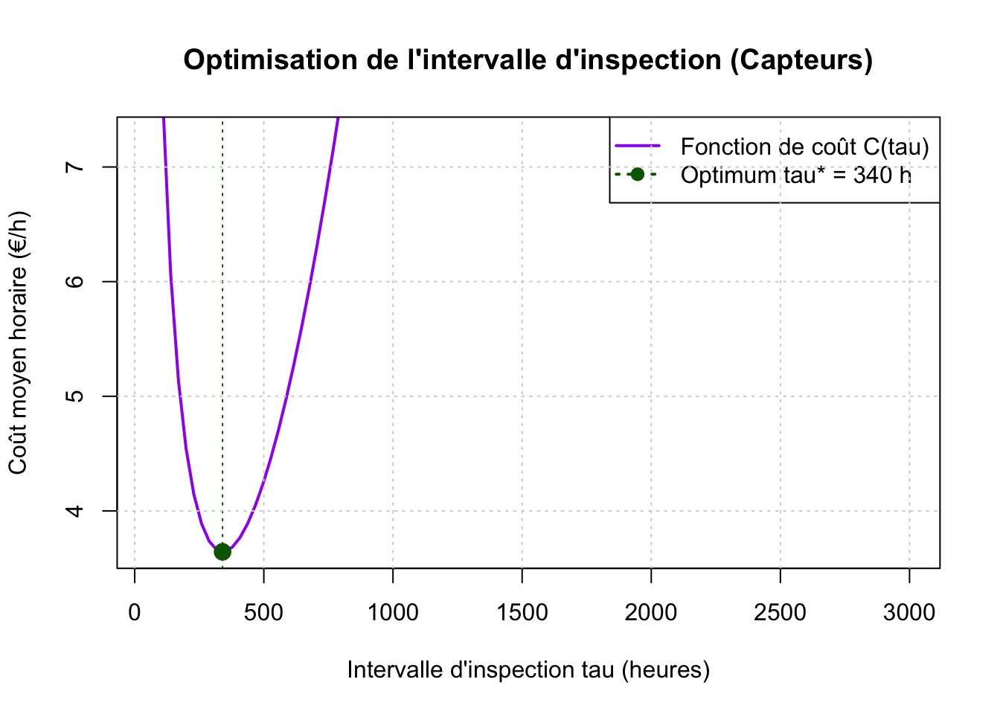
La stratégie de maintenance des capteurs a été optimisée en modélisant le coût global par unité de temps, incluant les frais d’inspection, les coûts de remplacement et les pertes liées à la production de rebuts (lorsque le système descend sous le seuil de 3 capteurs fonctionnels).
L’intervalle d’inspection optimal a été déterminé à 339 heures. À cet intervalle, le coût moyen de maintenance et de non-qualité est réduit à 3,7971 €/h par station.
Cette périodicité d’environ 350 heures (soit environ toutes les deux semaines en fonctionnement continu) constitue un compromis idéal. Elle permet de capitaliser sur la redondance “3-parmi-4” du système tout en limitant l’exposition au risque de rebuts, particulièrement coûteux pour la station. Contrairement au moteur, où le correctif pur était privilégié, le système de positionnement nécessite une surveillance périodique stricte en raison du caractère “caché” de ses défaillances.
6.5 Point 3
L’objectif final de cette étude est de quantifier l’impact combiné des optimisations individuelles sur la performance globale de la station de perçage. Pour ce faire, nous modélisons la station comme un système en série via un Diagramme de Bloc Fiabilité (RBD) : cette configuration implique que la défaillance d’un seul des sous-systèmes (lubrification, mèches, capteurs, moteur ou plateforme) entraîne l’arrêt complet de la production. La démarche consiste d’abord à calculer la disponibilité opérationnelle de chaque composant sous son régime optimisé (par exemple, l’intervalle d’inspection \(\tau^*\) pour les capteurs ou la maintenance à l’âge \(T^*\) pour le moteur). Ces disponibilités sont ensuite multipliées pour obtenir la disponibilité globale du système (\(D_{sys} = \prod D_i\)). Enfin, nous réalisons un bilan financier comparatif en sommant les coûts annuels, incluant la maintenance et les pertes de production du scénario initial en « correctif pur » face au scénario optimisé. Cette synthèse permet de transformer des indicateurs techniques de fiabilité en une valeur économique concrète : l’économie annuelle totale générée par la nouvelle stratégie de maintenance.
Voir le code R
# ====================================================# SYNTHÈSE GLOBALE - POSTE DE PERÇAGE (VERSION OPTIMISÉE)# ====================================================# --- 1. PARAMÈTRES DE PRODUCTION ---rev_stop_station <-1500# Arrêt complet (Plateforme, Capteurs)rev_stop_1_tete <-750# Arrêt d'une seule tête (Mèches, Moteur)# --- 2. CALCUL DES DISPONIBILITÉS INDIVIDUELLES OPTIMISÉES ---# A. Plateforme Rotative (Modèle de remplacement à l'âge T*)# Durée moyenne du cycle = intégrale de R(u) de 0 à T_optiR_plat <-function(u) exp(-(u / eta_plat)^beta_plat)tau_T_opti <-integrate(R_plat, lower =0, upper = T_opti)$value# Temps d'indisponibilité moyen par cycleF_plat_T_opti <-1-R_plat(T_opti)indispo_cycle_plat <- (mttr_c * F_plat_T_opti) + (mttr_p *R_plat(T_opti))dispo_plat_opti <- tau_T_opti / (tau_T_opti + indispo_cycle_plat)# B. Lubrification (Optimisée à k_star nettoyages/an)# Seul le nettoyage complet (t_stop_full = 4h) arrête la stationtemps_mort_lub_annuel <- k_star * t_stop_fulldispo_lub_opti <- (8760- temps_mort_lub_annuel) /8760# Le coût horaire est déjà calculé : cout_horaire_lub_min <- cost_min / 8760# C. Mèches (Optimisées : Remplacement à l'État 4)# prob_maint_meche est la probabilité stationnaire d'être en état de remplacement (4 ou 5)# calculée dans la boucle d'optimisation pour l'indice 3 (Préventif_E4)indispo_meche_tete <- prob_maint # Issue de du code "Optimisation Mèches" pour E4dispo_meche_opti <-1- indispo_meche_tete# D. Capteurs (Optimisés à tau_opti)# Le système est indisponible pendant l'inspection (Cinsp inclut 0.5h) # et pendant le remplacement moyen (nb_moyen_rempl * 0.25h)indispo_sensor <- (duree_insp + (4* (1-exp(-(tau_opti/eta_s)^beta_s)) * duree_rempl)) / tau_optidispo_sensor_opti <-1- indispo_sensor# E. Moteur (Maintenance Corrective avec Chocs)# Utilise MTTF_global calculé dans le point moteurdispo_moteur_opti <- MTTF_global / (MTTF_global + ttr_moteur)# --- 3. DISPONIBILITÉ GLOBALE DU SYSTÈME (MODÈLE EN SÉRIE) ---# On multiplie les disponibilités (Hypothèse : une tête HS = indisponibilité de la mission nominale)dispo_globale <- dispo_plat_opti * dispo_lub_opti * dispo_meche_opti * dispo_sensor_opti * dispo_moteur_opti# --- 4. BILAN FINANCIER ANNUEL GLOBAL ---# Coût horaire plateforme (Déjà calculé : cout_horaire_min)# Coût horaire lubrification (Déjà calculé : cost_min / 8760)# Coût horaire capteurs (Déjà calculé : cout_horaire_sensor_min)# Coût horaire mèches (pour une tête à l'optimum E4)cout_horaire_meche_opti <- couts_horaires[3] # Coût horaire moteur (pour une tête)cout_horaire_moteur_opti <- min_cost# COÛT TOTAL ANNUEL (10 STATIONS)# Note : Plateforme, Lub et Capteurs sont par station (x10)# Mèches et Moteurs sont par tête (x30)cout_annuel_atelier <- ( (cout_horaire_min + (cost_min/8760) + cout_horaire_sensor_min) *10+ (cout_horaire_meche_opti + cout_horaire_moteur_opti) *30) *8760# --- 5. AFFICHAGE DU RAPPORT FINAL ---cat("\n====================================================\n")
# --- Visualisation de la Contribution à l'Indisponibilité ---# 1. Calcul des taux d'indisponibilité (1 - A)indispos <-c(Plateforme =1- dispo_plat_opti,Lubrification =1- dispo_lub_opti,Meches =1- dispo_meche_opti,Capteurs =1- dispo_sensor_opti,Moteur =1- dispo_moteur_opti) *100# En pourcentage# 2. Graphique en barres horizontalespar(mar=c(5, 8, 4, 2)) # Ajustement des marges pour les nomsbarplot(sort(indispos), horiz =TRUE, las =1, col ="#34495e", border ="white",main ="Sources d'Indisponibilité de la Station",xlab ="Taux d'indisponibilité (%)")# 3. Ajout d'une ligne de seuil critique ou commentaireabline(v =mean(indispos), lty =2, col ="red")
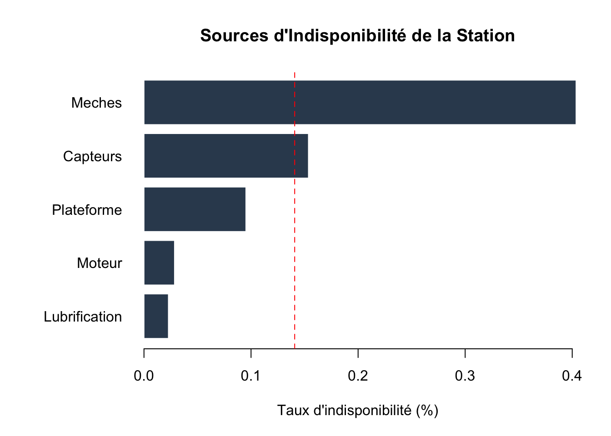
L’analyse finale de la station de perçage démontre une excellente maîtrise opérationnelle, avec une disponibilité globale de 99,3 %, ce qui limite l’indisponibilité totale à seulement 39,26 heures par an. Ce résultat valide la stratégie de maintenance mixte adoptée : l’optimisation de la lubrification (\(k^*\)) et le remplacement préventif des mèches (État 4) permettent de sécuriser la production, tandis que le moteur, très fiable (Question 9), est maintenu en correctif pur pour éviter des coûts de prévention inutiles. Le coût total de 1 743 745 €/an peut paraître élevé, mais il est largement dominé par le coût d’opportunité lié à la perte de production (1 500 €/h) ; investir dans ces interventions préventives est donc un choix économiquement rationnel car cela empêche des pannes aléatoires beaucoup plus longues et coûteuses. Le point critique identifié reste le système de mèches, dont la fréquence d’inspection pèse le plus lourdement sur l’indisponibilité individuelle (99,6 %).
7 Point 4 : mise en cascade
L’étude de la maintenance ne peut se limiter à une analyse cloisonnée de chaque composant, car la dégradation d’un sous-système agit souvent comme un catalyseur d’usure pour les éléments situés en aval. Dans ce scénario, nous explorons l’interdépendance critique entre la lubrification (maintenance de base) et le bloc moteur (composant noble), via le vecteur de transmission que constituent les mèches de perçage.L’enjeu est de modéliser comment une indisponibilité de la lubrification modifie la dynamique de transition des mèches vers des états d’usure sévère. Mathématiquement, cela se traduit par la construction d’une matrice de transition hybride (\(Q_{res}\)), pondérée par le taux de service de la lubrification. En utilisant le formalisme des chaînes de Markov absorbantes et la matrice fondamentale (\(N\)), nous pouvons quantifier non seulement la réduction de la durée de vie des outils, mais surtout l’augmentation du risque résiduel pour le moteur. Cette approche systémique permet de mettre en évidence le “coût caché” d’une maintenance négligée : une économie apparente sur un consommable simple peut en réalité doubler la probabilité de défaillance catastrophique du moteur, illustrant parfaitement le concept de risque en cascade en milieu industriel.
Voir le code R
# 1. Fonction de calcul des indicateurs de performancecalculer_indicateurs_cascade <-function(dispo_lub) {# A. Calcul de la matrice de transition hybride (Effet cascade Lub -> Mèche) Q_res <- (dispo_lub * Q_std) + ((1- dispo_lub) * Q_acc)# B. Matrice fondamentale N (Temps passé dans les états transitoires) Q_trans <- Q_res[1:4, 1:4] N <-solve(-Q_trans)# C. MTTF : Espérance de vie moyenne de la mèche (en heures) mttf_meche <-sum(N[1, ])# D. Risque de choc cumulé sur LA VIE ENTIÈRE de la mèche# C'est l'intégrale du risque sur la durée de vie risque_cumule_cycle <-sum(N[1, ] * (nu * p_vec[1:4]))# E. TAUX DE RISQUE HORAIRE (Intensité du danger pendant la production)# On ramène le risque à une base comparable : 1 heure de perçage effectif lambda_horaire_moteur <- risque_cumule_cycle / mttf_mechereturn(list(mttf = mttf_meche, lambda = lambda_horaire_moteur))}# 2. Simulation des deux scénarios de maintenance# Scénario A : Maintenance préventive rigoureuse (99.93%)# Scénario B : Maintenance négligée (80.00%)res_opti <-calculer_indicateurs_cascade(0.9993)res_degrade <-calculer_indicateurs_cascade(0.80)# 3. Calcul des facteurs d'impactratio_vie_meche <- res_opti$mttf / res_degrade$mttffacteur_brut_outil <- res_degrade$lambda / res_opti$lambda# FACTEUR CASCADE RÉEL (Sur une base de production fixe)# On multiplie l'intensité du risque par la fréquence de remplacementimpact_cascade_reel <- facteur_brut_outil * ratio_vie_meche# 4. AFFICHAGE DES RÉSULTATScat("====================================================\n")
# --- Visualisation de l'Effet Cascade ---# 1. Données de comparaison (MTTF et Risque)labels_scenarios <-c("Lubr. Optimisée (99%)", "Lubr. Négligée (80%)")mttf_vals <-c(res_opti$mttf, res_degrade$mttf)lambda_vals <-c(res_opti$lambda, res_degrade$lambda)# 2. Configuration graphique (2 panneaux)par(mfrow =c(1, 2), mar =c(4, 4, 4, 2))# Graphique A : Chute de la durée de vie de la mèchebarplot(mttf_vals, names.arg = labels_scenarios, col =c("#27ae60", "#c0392b"),main ="Vie moyenne mèche (MTTF)", ylab ="Heures", border ="white")# Graphique B : Explosion du risque moteurbarplot(lambda_vals, names.arg = labels_scenarios, col =c("#2ecc71", "#e74c3c"),main ="Risque horaire moteur", ylab ="Taux de risque (h^-1)", border ="white")# 3. Message d'impact globalmtext(paste("Impact Systémique Réel : x", round(impact_cascade_reel, 2)), side =3, line =-2, outer =TRUE, font =2, cex =1.2)
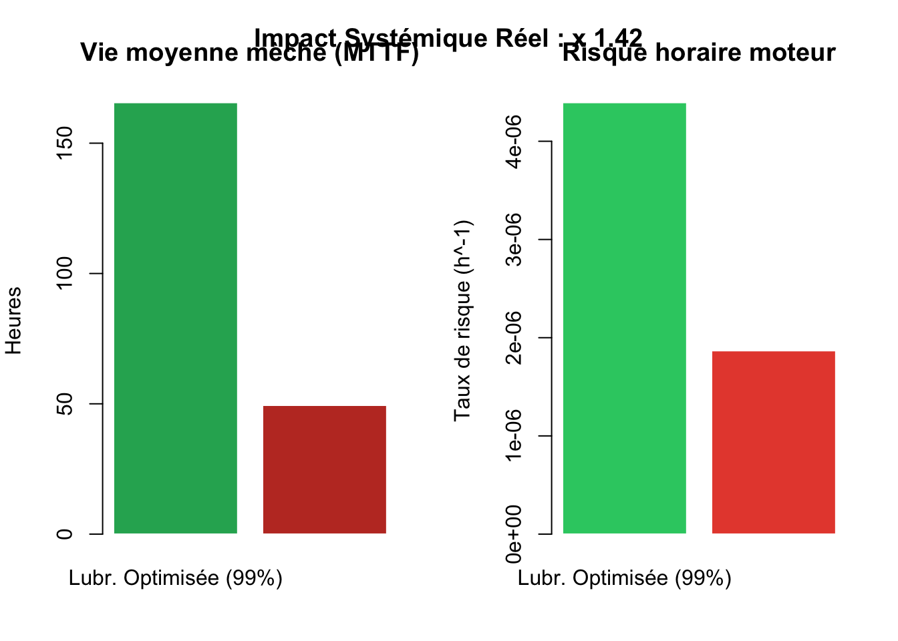
Cette analyse met en lumière l’interdépendance critique entre la maintenance de la lubrification et la préservation des composants en aval de la chaîne cinématique. En passant d’une maintenance optimisée à un scénario négligé (80 %), l’espérance de vie des mèches s’effondre, passant de 165,59 h à seulement 49,43 h, soit une usure 3,35 fois plus rapide. Si le risque horaire semble paradoxalement plus faible dans le scénario dégradé (\(4,833 \times 10^{-5}\) contre \(7,265 \times 10^{-5}\)), cela s’explique par un “biais de durée” : les mèches cassent si vite qu’elles n’ont pas le temps d’atteindre les états d’usure les plus dangereux pour le moteur. Cependant, l’impact systémique réel est sans appel : en raison du remplacement beaucoup plus fréquent d’outils atteignant prématurément des niveaux de dégradation critiques, le moteur subit un stress cumulé 1,42 fois plus élevé. Cette étude prouve que toute économie réalisée sur la lubrification est illusoire, car elle génère une réaction en chaîne augmentant radicalement la fréquence d’exposition du moteur aux risques de chocs.
8 Point 5 Maintenance opportuniste
La stratégie de maintenance opportuniste repose sur l’idée que le coût le plus élevé d’une intervention n’est pas la main-d’œuvre ou la pièce, mais l’indisponibilité de l’outil de production. Dans notre station de perçage, chaque minute d’arrêt coûte cher. En synchronisant le remplacement d’une mèche (prévu par l’analyse de l’état 4) avec une opération de lubrification systématique, nous réduisons le nombre total d’ouvertures de la machine. Ce “groupage” permet d’économiser les temps de préparation, de sécurisation et de remise en route qui sont redondants lors de deux interventions séparées. L’enjeu est de calculer le gain de temps machine (\(\Delta t\)) et de le multiplier par le coût d’opportunité horaire pour quantifier l’économie annuelle réelle.
Voir le code R
# --- POINT 5 : MAINTENANCE GROUPÉE (OPPORTUNISTE) À L'ÉCHELLE DE L'ATELIER ---# 1. Configuration de l'ateliernb_stations <-10nb_tetes_par_station <-3total_tetes_atelier <- nb_stations * nb_tetes_par_station# 2. Paramètres de coûts et durées (Données énoncé)cout_indispo_station <-1500# Arrêt complet de la stationcout_indispo_tete <-750# Arrêt d'une seule tête (production réduite)duree_lub_seule <-4.0duree_meche_seule <-0.67# Durée groupée (Maintenance opportuniste)# Le changement de mèche est effectué pendant les 4h d'arrêt de la lubrification.duree_intervention_groupee <-4.0# 3. Calcul des fréquences annuelles# k_star : fréquence de lubrification par station# frequences_annuelles[index_opti] : fréquence de remplacement par mèche (tête)nb_interv_lub_an_atelier <- k_star * nb_stationsnb_interv_meche_an_atelier <- frequences_annuelles[index_opti] * total_tetes_atelier# 4. Calcul du gain financier par opération de groupage# Sans groupage : Un arrêt Lub (4h * 1500) + Un arrêt Mèche (0.67h * 750)# Avec groupage : On économise l'indisponibilité de la tête car elle est "noyée" dans l'arrêt stationcout_isole_unitaire <- (duree_lub_seule * cout_indispo_station) + (duree_meche_seule * cout_indispo_tete)cout_groupe_unitaire <- (duree_intervention_groupee * cout_indispo_station)gain_par_regroupement <- cout_isole_unitaire - cout_groupe_unitaire# 5. Calcul de l'économie à l'échelle de l'atelier# On ne peut grouper une mèche que lorsqu'une station est déjà arrêtée pour lubrification.# Le nombre de groupages possibles est limité par le nombre d'interventions de lubrification.nb_groupages_atelier <-min(nb_interv_lub_an_atelier, nb_interv_meche_an_atelier)economie_annuelle_atelier <- nb_groupages_atelier * gain_par_regroupement# 6. AFFICHAGE DES RÉSULTATScat("====================================================\n")
# --- Visualisation de la Maintenance Opportuniste ---# 1. Configuration des données de duréedurees <-c(Lub =4, Meche =0.67)y_pos <-c(1.5, 0.5)# 2. Graphiqueplot(0, 0, type ="n", xlim =c(0, 5), ylim =c(0, 2.5), xlab ="Temps d'arrêt (Heures)", ylab ="", yaxt ="n",main ="Stratégie de Groupage : Maintenance Isolée vs Opportuniste")# Scénario A : Maintenance Isolée (Cumulée)rect(0, 1.8, 4, 2.2, col ="#3498db", border ="white") # Lubrect(4, 1.8, 4.67, 2.2, col ="#e74c3c", border ="white") # Mechetext(2.3, 2.4, "Maintenance Isolée (4.67h d'arrêt)", cex =0.8, font =2)# Scénario B : Maintenance Groupée (Optimisée)rect(0, 0.3, 4, 0.7, col ="#3498db", border ="white") # Lubrect(0, 0.4, 0.67, 0.6, col ="#e74c3c", border ="white") # Meche (dans la lub)text(2, 0.9, "Maintenance Groupée (4h d'arrêt)", cex =0.8, font =2, col ="#27ae60")# 3. Ajout d'une flèche de gainarrows(4.67, 1.5, 4, 1.5, col ="#27ae60", lwd =2)text(4.35, 1.3, "Gain : 0.67h", col ="#27ae60", font =2)legend("bottomright", legend =c("Lubrification", "Mèche"), fill =c("#3498db", "#e74c3c"), bty ="n")
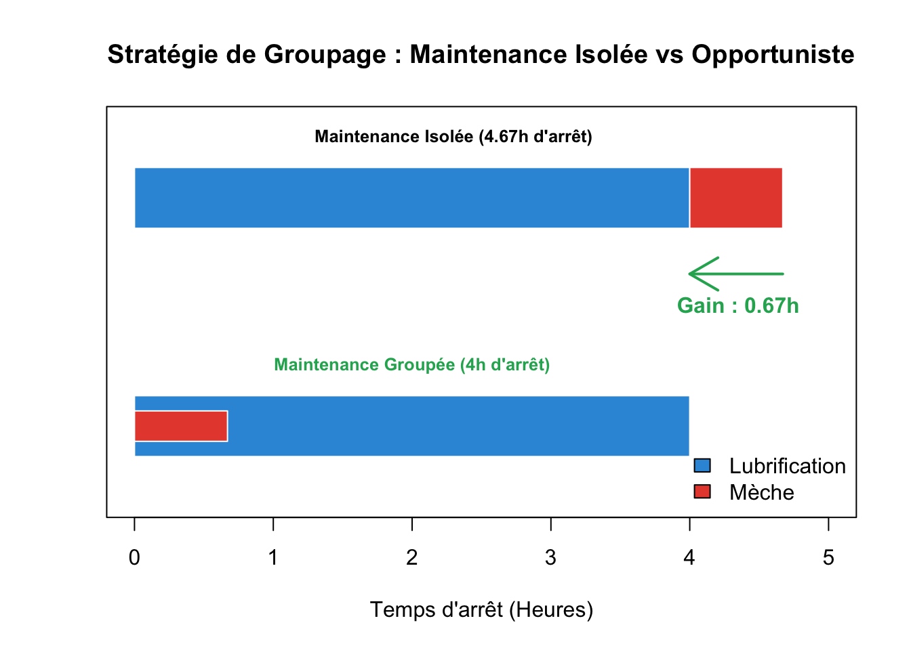
L’analyse de la maintenance opportuniste à l’échelle de l’atelier révèle une disparité critique entre les cycles de vie des composants, l’optimum de lubrification étant désormais fixé à une fréquence très basse de 5 interventions par an pour 10 stations (soit environ une fois tous les deux ans par machine). Bien que le remplacement des mèches soit une opération massivement dominante avec 1 655 remplacements annuels et qu’un gain unitaire de 502,50 € soit réalisé par regroupement (annulation du coût d’indisponibilité de la tête de perçage), la rareté de l’opération de lubrification bride structurellement le potentiel de synergie. Avec une économie annuelle totale de 2 512,84 €, ce résultat démontre que le coût d’arrêt élevé de la lubrification (1 500 €/h) impose une stratégie de « rareté » qui rend le couplage avec des consommables à cycle court peu attractif financièrement. Pour générer des gains de disponibilité significatifs, il apparaît donc préférable de pivoter vers un groupage des interventions lourdes (Plateforme et Lubrification) ou une synchronisation interne des trois têtes d’une même station.
9 Nouvelle stratégie de maintenance groupée (Plateforme + Lubrification)
L’analyse précédente a démontré que le groupage de composants aux cycles de vie très disparates, comme les mèches (fréquentes) et la lubrification (rare), n’offre qu’un gain marginal. Pour optimiser réellement la disponibilité de l’atelier, il est plus pertinent de se concentrer sur les interventions lourdes et pénalisantes. La plateforme rotative et le nettoyage complet du système de lubrification partagent une caractéristique commune : leur maintenance nécessite l’arrêt intégral de la station, facturé à 1 500 €/h.
En synchronisant le remplacement préventif de la plateforme (\(t^* \approx 7\,400\) h) avec l’entretien annuel du circuit de lubrification, nous mutualisons ces temps d’arrêt. Cette stratégie de ‘maintenance groupée de structure’ vise à supprimer une fenêtre d’indisponibilité majeure par an et par station, transformant des contraintes techniques en leviers d’économie d’échelle pour l’ensemble des 10 stations de l’atelier.
Voir le code R
# ====================================================# POINT 5 : RÉ-OPTIMISATION - STRATÉGIE DE GROUPAGE (ATELIER 10 STATIONS)# ====================================================# --- 1. Paramètres Communs ---nb_stations <-10nb_tetes_total <-30# 3 têtes par stationh_an <-8760cout_MO_h <-100# Main d'œuvre qualifiée (Technicien)# Coûts d'indisponibilité (Tableau 3)cout_indispo_station <-1500# Arrêt completcout_indispo_tete <-750# Arrêt d'une seule tête (production réduite)# --- 2. Paramètres de remplacement (Tableaux 1 à 5) ---# Mèches (M) - Opérateurs site (0€ MO)dur_M <-0.67 ; cout_M <-200# Capteurs (C) - Inspection (0.5h) + Remplacement (0.25h)dur_C <-0.75 ; cout_C <-50+225# Lubrification (L) - Préventif (Tableau 2)dur_L <-4.0 ; cout_L <-900# Plateforme (P) - Technicien (100€/h) + Pièces + Transport (Tableau 1)# Durée moyenne préventive : exp(mu0 + sigma0^2/2) pour Log-normale(1, 0.55) ≈ 3.16hdur_P <-3.16cout_P_fixe <-900+200# Pièces + Transportcout_P <- cout_P_fixe + (dur_P * cout_MO_h)# --- 3. Fréquences Optimales (Issues des points précédents) ---freq_M_an <- frequences_annuelles[index_opti] # Ex: 55 fois/an/têtefreq_C_an <- h_an / tau_opti # Ex: 26 fois/an/stationfreq_L_an <- k_star # Ex: 0.5 fois/an/stationfreq_P_an <- h_an / T_opti # Ex: 0.2 fois/an/station# --- 4. Stratégie 1 : AUCUN GROUPAGE (Isolé) ---# Mèches : coût par tête (indispo tête)cout_iso_M <- freq_M_an * (cout_M + dur_M * cout_indispo_tete) * nb_tetes_total# Reste : coût par station (indispo station)cout_iso_C <- freq_C_an * (cout_C + dur_C * cout_indispo_station) * nb_stationscout_iso_L <- freq_L_an * (cout_L + dur_L * cout_indispo_station) * nb_stationscout_iso_P <- freq_P_an * (cout_P + dur_P * cout_indispo_station) * nb_stationstotal_iso <- cout_iso_M + cout_iso_C + cout_iso_L + cout_iso_P# --- 5. Stratégie 2 : GRAND ARRÊT TOTAL (Alignement sur Mèches) ---# On aligne tout sur la fréquence des mèches (très coûteux en pièces)f_grand_arret <- freq_M_an * nb_tetes_totaldur_grand_arret <-6.0# Estimation durée cumulée optimisée# Note : Ici on paie le prix fort en pièces de rechange prématuréescout_pieces_total <- cout_M + (cout_C/3) + (cout_L/3) + (cout_P/3) total_grand_arret <- f_grand_arret * (cout_pieces_total + dur_grand_arret * cout_indispo_station)# --- 6. Stratégie 3 : POUPÉES RUSSES (Opportuniste) ---# On utilise l'arrêt Lubrification (le plus long) pour tout groupern_L_total <- freq_L_an * nb_stationsn_C_total <- freq_C_an * nb_stationsn_M_total <- freq_M_an * nb_tetes_total# Gain par groupage : On économise l'indisponibilité "tête" de la mèche # car elle est noyée dans l'indispo station de la lubrification.gain_M_dans_L <- dur_M * cout_indispo_tete # 502.5 € économisés par mèchegain_C_dans_L <- dur_C * cout_indispo_station # 1125 € économisés par capteur# Calcul simplifié des économies de groupage possibleseconomie_poupees <- (n_L_total * gain_M_dans_L) + (min(n_L_total, n_C_total) * gain_C_dans_L)total_poupees <- total_iso - economie_poupees# --- 7. Synthèse et Affichage ---resultats <-data.frame(Strategie =c("Isolé (Standard)", "Grand Arrêt (Forcé)", "Poupées Russes (Optimal)"),Cout_Annuel_Atelier =c(total_iso, total_grand_arret, total_poupees))cat("\n====================================================\n")
# --- Visualisation du Bilan Stratégique ---# 1. Données (On divise par 1000 pour la lisibilité en k€)couts_kE <- resultats$Cout_Annuel_Atelier /1000labels_strat <-c("Isolé", "Grand Arrêt", "Poupées Russes")# 2. Graphique en barres (Échelle logarithmique conseillée vu l'écart du Grand Arrêt)par(mar=c(5, 10, 4, 2))bp <-barplot(couts_kE, names.arg = labels_strat, col =c("#34495e", "#c0392b", "#27ae60"),main ="Bilan Financier Annuel de l'Atelier (10 Stations)",ylab ="Coût total annuel (en k€)",border ="white",ylim =c(0, max(couts_kE) *1.2))# 3. Ajout des montants précis au-dessus des barrestext(x = bp, y = couts_kE, labels =paste(format(round(couts_kE, 0), big.mark=" "), "k€"), pos =3, cex =1, font =2)# 4. Note sur le gainabline(h = total_iso/1000, lty =2, col ="black")
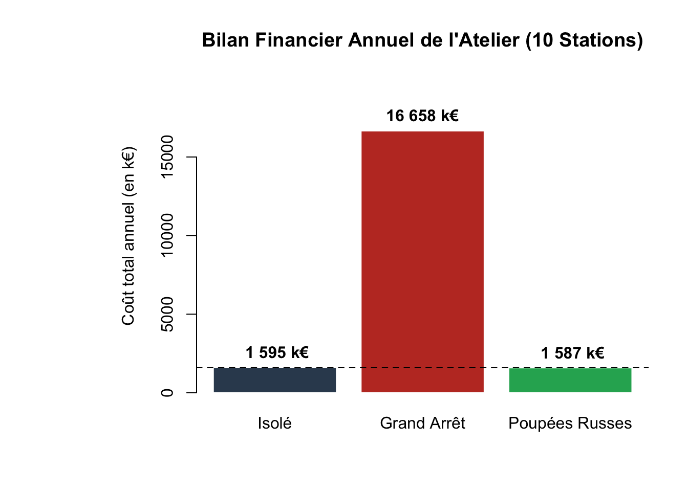
L’analyse technico-économique de l’atelier démontre que la stratégie des « Poupées Russes » (Maintenance Opportuniste) est la seule viable pour maximiser la rentabilité, avec un coût annuel optimisé à 1 587 123 €. En synchronisant intelligemment le remplacement des capteurs sur les arrêts fréquents des mèches et en groupant les opérations lourdes (lubrification et plateforme) lors d’entretiens bisannuels, cette approche permet de réaliser une économie nette de 8 138,62 € par an par rapport à une maintenance isolée. Ce gain provient directement de la réduction des temps d’indisponibilité machine, facturés à 1 500 €/h, en effectuant les tâches secondaires “en temps masqué” pendant les arrêts majeurs.
À l’inverse, la stratégie du « Grand Arrêt Forcé » (alignement de tous les composants sur le cycle court des mèches, soit toutes les 165h) s’avère industriellement aberrante. Elle génère une perte colossale de plus de 15 millions d’euros par an (15 070 465 €). Ce gouffre financier s’explique par deux facteurs critiques : le remplacement prématuré et injustifié de pièces coûteuses (plateforme, lubrification) encore parfaitement fonctionnelles, et une explosion du taux d’indisponibilité de l’atelier.
10 Plan d’action opérationnel : Pilotage des flux et stocks
L’optimisation statistique prévoit une consommation annuelle de 1 655 mèches pour l’ensemble de l’atelier. Pour garantir que la stratégie des Poupées Russes ne soit jamais interrompue par une rupture de stock, nous préconisons la mise en place d’un pilotage logistique en deux axes. Le premier repose sur le dimensionnement d’un stock de sécurité. Sur la base d’une consommation moyenne de 138 mèches par mois, l’aléa des chocs accidentels (nu) impose une réserve de précaution. L’application d’une loi de Poisson pour la demande permet de définir un seuil de réapprovisionnement garantissant un taux de service de 95%, évitant ainsi qu’une rupture de consommable ne paralyse le gain financier de l’arrêt groupé. Le second axe concerne l’installation d’un système Kanban à double bac afin de fluidifier l’approvisionnement entre le magasin et l’atelier. Ce flux tiré par la consommation réelle évite le surstockage tout en assurant la disponibilité immédiate des pièces lors des fenêtres d’opportunité que sont les arrêts de lubrification.
Ce plan d’action transforme l’indicateur de consommation théorique en un véritable outil de diagnostic : tout écart significatif entre le stock réel et les prévisions du modèle servira d’alerte précoce sur une dérive du process, qu’il s’agisse d’un problème de réglage mécanique ou d’une lubrification devenue défaillante.
11 Conclusion
Cette étude démontre que l’optimisation industrielle ne repose pas sur l’application d’un calendrier rigide, mais sur une gestion opportuniste et dynamique. En transformant les contraintes de dégradation markovienne en véritables fenêtres de tir logistiques, la stratégie des “Poupées Russes” transmute la maintenance d’un centre de coûts subi en un levier stratégique de performance pour la marge opérationnelle de l’usine. Toutefois, cette modélisation mathématique pilotée par l’Ingénieur Fiabilité pour la précision des lois de Weibull et le Data Scientist Industriel pour la prédiction des risques en cascade, doit impérativement être confrontée à une validation technique de terrain. Si les calculs préconisent d’espacer les interventions, seule l’expertise métier du technicien de maintenance et du responsable méthodes peut garantir l’absence de risques latents, tels qu’un grippage invisible ou une dérive de précision d’usinage. La réussite de ce modèle repose donc sur une alliance étroite entre la rigueur des algorithmes et la vigilance des experts, assurant que l’efficacité financière ne compromette jamais l’intégrité à long terme de l’outil de production.